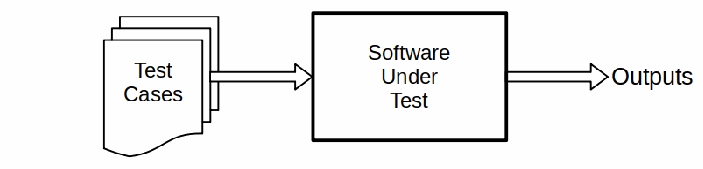
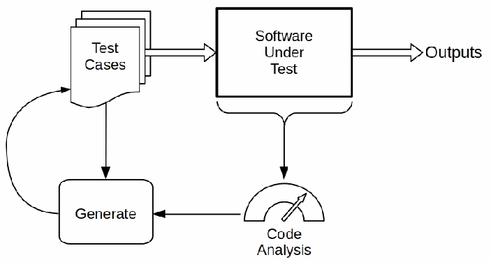

NIST IR 8397 日本語訳
英語タイトル : Guidelines on Minimum Standards for Developer Verification of Software日本語タイトル : ソフトウェアに対する開発者検証の最小基準に関するガイドライン
公開日 : 2021-10-06
原文URL : https://csrc.nist.gov/pubs/ir/8397/final
翻訳編集 : 自動生成（有志による非公式の日本語訳）, 原文取得日 : 2026-10-31, 訳文 : 394 / 396 ブロック
[要約] NIST IR 8397 は、2021年5月12日の大統領令（EO）14028『Improving the Nation’s Cybersecurity』が NIST に求めた、ソフトウェアテストの最小基準の推奨を示すガイドラインです。本書は、ソフトウェア検証技法に関する 11 の推奨事項を述べ、それらの技法に関する補足情報とさらなる情報のための参考文献を提供します。推奨される技法には、脅威モデリング、自動テスト、静的コードスキャン、ハードコードされたシークレットの確認、ブラックボックスのテストケース、コードに基づく構造的テストケース、過去のテストケース、ファジング、Web アプリケーションスキャナー、取り込まれたコードへの対処などがあります。本書はソフトウェア検証の全体を扱うものではなく、広く適用可能な最小基準の技法を推奨するものであり、National Security Agency（NSA）と協議のうえ NIST が作成しました。
NISTIR 8397
NISTIR 8397
Guidelines on Minimum Standards for Developer Verification of Software
ソフトウェアに対する開発者検証の最小基準に関するガイドライン
Paul E. Black Barbara Guttman Vadim Okun
Paul E. Black Barbara Guttman Vadim Okun
This publication is available free of charge from: https://doi.org/10.6028/NIST.IR.8397
この刊行物は次の場所から無料で入手できます: https://doi.org/10.6028/NIST.IR.8397
［NIST のロゴ。公的な標章のため、この非公式サイトには掲載していません。原本 PDF を参照してください。］
NISTIR 8397
NISTIR 8397
Guidelines on Minimum Standards for Developer Verification of Software
ソフトウェアに対する開発者検証の最小基準に関するガイドライン
Paul E. Black Barbara Guttman Vadim Okun Software and Systems Division Information Technology Laboratory
Paul E. Black Barbara Guttman Vadim Okun Software and Systems Division Information Technology Laboratory
This publication is available free of charge from: https://doi.org/10.6028/NIST.IR.8397
この刊行物は次の場所から無料で入手できます: https://doi.org/10.6028/NIST.IR.8397
October 2021
2021年10月
［米国商務省の紋章。公的な標章のため、この非公式サイトには掲載していません。原本 PDF を参照してください。］
U.S. Department of Commerce Gina M. Raimondo, Secretary
米国商務省 Gina M. Raimondo 長官
National Institute of Standards and Technology James K. Olthoff, Performing the Non-Exclusive Functions and Duties of the Under Secretary of Commerce for Standards and Technology & Director, National Institute of Standards and Technology
国立標準技術研究所 James K. Olthoff、商務次官（標準・技術担当）兼国立標準技術研究所所長の非専属的な職務および任務を代行
Certain commercial entities, equipment, or materials may be identified in this document in order to describe an experimental procedure or concept adequately. Such identification is not intended to imply recommendation or endorsement by the National Institute of Standards and Technology, nor is it intended to imply that the entities, materials, or equipment are necessarily the best available for the purpose.
この文書では、実験手順や概念を適切に説明するために、特定の商業的な事業体、機器、または資材を明示している場合があります。このような明示は、National Institute of Standards and Technology による推奨や推薦を意味するものではなく、それらの事業体、資材、または機器がその目的にとって必ずしも最良であることを意味するものでもありません。
National Institute of Standards and Technology Interagency or Internal Report 8397 Natl. Inst. Stand. Technol. Interag. Intern. Rep. 8397, 33 pages (October 2021)
National Institute of Standards and Technology Interagency or Internal Report 8397 Natl. Inst. Stand. Technol. Interag. Intern. Rep. 8397, 33 pages (October 2021)
This publication is available free of charge from: https://doi.org/10.6028/NIST.IR.8397
この刊行物は次の場所から無料で入手できます: https://doi.org/10.6028/NIST.IR.8397
Abstract
要旨
Executive Order (EO) 14028, Improving the Nation’s Cybersecurity, 12 May 2021, directs the National Institute of Standards and Technology (NIST) to recommend minimum standards for software testing within 60 days. This document describes eleven recommendations for software verification techniques as well as providing supplemental information about the techniques and references for further information. It recommends the following techniques:
2021年5月12日の大統領令（EO）14028『Improving the Nation’s Cybersecurity』は、National Institute of Standards and Technology（NIST）に対し、60日以内にソフトウェアテストの最小基準を推奨するよう指示しています。この文書は、ソフトウェア検証技法に関する11の推奨事項を述べるとともに、それらの技法に関する補足情報とさらなる情報のための参考文献を提供します。次の技法を推奨します。
•Threat modeling to look for design-level security issues
•設計レベルのセキュリティ上の問題を探すための脅威モデリング
•Automated testing for consistency and to minimize human effort
•一貫性を確保し、人手を最小限にするための自動テスト
•Static code scanning to look for top bugs
•主要なバグを探すための静的コードスキャン
•Heuristic tools to look for possible hardcoded secrets
•ハードコードされたシークレットの可能性を探すためのヒューリスティックツール
•Use of built-in checks and protections
•組み込みのチェックと保護機能の使用
•“Black box” test cases
•「ブラックボックス」テストケース
•Code-based structural test cases
•コードに基づく構造的テストケース
•Historical test cases
•過去のテストケース
•Fuzzing
•ファジング
•Web app scanners, if applicable
•該当する場合は Web アプリケーションスキャナー
•Address included code (libraries, packages, services)
•取り込まれたコード（ライブラリ、パッケージ、サービス）への対処
The document does not address the totality of software verification, but instead, recommends techniques that are broadly applicable and form the minimum standards.
この文書は、ソフトウェア検証の全体を扱うものではなく、広く適用可能で最小基準となる技法を推奨するものです。
The document was developed by NIST in consultation with the National Security Agency (NSA). Additionally, we received input from numerous outside organizations through papers submitted to a NIST workshop on the Executive Order held in early June 2021, discussion at the workshop, as well as follow up with several of the submitters.
この文書は、National Security Agency（NSA）と協議のうえ、NIST が作成しました。加えて、2021年6月上旬に開催された大統領令に関する NIST ワークショップに提出された論文、ワークショップでの議論、および数名の提出者へのフォローアップを通じて、多数の外部組織から意見を得ました。
Keywords
キーワード
software assurance; verification; testing; static analysis; fuzzing; code review; software security.
software assurance; verification; testing; static analysis; fuzzing; code review; software security.
Additional Information
追加情報
For additional information on NIST’s Cybersecurity programs, projects, and publications, visit the Computer Security Resource Center. Information on other efforts at NIST and in the Information Technology Laboratory (ITL) is also available.
NIST のサイバーセキュリティに関するプログラム、プロジェクト、刊行物の追加情報については、Computer Security Resource Center をご覧ください。NIST および Information Technology Laboratory（ITL）におけるその他の取り組みに関する情報も入手できます。
This document was written at the National Institute of Standards and Technology by employees of the Federal Government in the course of their official duties. Pursuant to Title 17, Section 105 of the United States Code, this is not subject to copyright protection and is in the public domain.
この文書は、連邦政府の職員が職務の遂行にあたり National Institute of Standards and Technology で作成したものです。合衆国法典第17編第105条に基づき、著作権による保護の対象とはならず、パブリックドメインです。
We would appreciate acknowledgment if this document is used.
この文書を利用する場合は、その旨を明記していただければ幸いです。
Acknowledgments
謝辞
The authors particularly thank Fay Saydjari for catalyzing our discussion of scope; Virginia Laurenzano for infusing DevOps Research and Assessments (DORA) principles into the report and other material; Larry Wagoner for numerous contributions and comments; Steve Lipner for reviews and suggestions; David A. Wheeler for extensive corrections and recommendations; and Aurelien M. Delaitre, William Curt Barker, Murugiah Souppaya, Karen Scarfone, and Jim Lyle for their many efforts.
著者らは、とくに次の方々に感謝します。範囲に関する議論のきっかけを作ってくださった Fay Saydjari 氏、DevOps Research and Assessments（DORA）の原則を報告書やその他の資料に取り入れてくださった Virginia Laurenzano 氏、数多くの貢献とコメントをくださった Larry Wagoner 氏、レビューと提案をくださった Steve Lipner 氏、広範な訂正と推奨事項をくださった David A. Wheeler 氏、そして多大な尽力をくださった Aurelien M. Delaitre 氏、William Curt Barker 氏、Murugiah Souppaya 氏、Karen Scarfone 氏、Jim Lyle 氏です。
We thank the following for reviewing various codes, standards, guides, and other material: Jessica Fitzgerald-McKay, Hialo Muniz, and Yann Prono. For the acronyms, glossary, and other content, we thank Matthew B. Lanigan, Nhan L. Vo, William C. Totten, and Keith W. Beatty.
さまざまなコード、標準、ガイド、その他の資料をレビューしてくださった Jessica Fitzgerald-McKay 氏、Hialo Muniz 氏、Yann Prono 氏に感謝します。略語、用語集、その他の内容については、Matthew B. Lanigan 氏、Nhan L. Vo 氏、William C. Totten 氏、Keith W. Beatty 氏に感謝します。
We thank all those who submitted position papers applicable for our area to our June 2021 workshop.
2021年6月のワークショップに、当方の分野に関連するポジションペーパーを提出してくださったすべての方々に感謝します。
This document benefited greatly from additional women and men who shared their insights and expertise during weekly conference calls between NIST and National Security Agency (NSA) staff: Andrew White, Anne West, Brad Martin, Carol A. Lee, Eric Mosher, Frank Taylor, George Huber, Jacob DePriest, Joseph Dotzel, Michaela Bernardo, Philip Scherer, Ryan Martin, Sara Hlavaty, and Sean Weaver. Kevin Stine, NIST, also participated.
この文書は、NIST と National Security Agency（NSA）の職員が毎週行った電話会議で知見と専門性を共有してくださった、次の多くの方々から大きな恩恵を受けています。Andrew White 氏、Anne West 氏、Brad Martin 氏、Carol A. Lee 氏、Eric Mosher 氏、Frank Taylor 氏、George Huber 氏、Jacob DePriest 氏、Joseph Dotzel 氏、Michaela Bernardo 氏、Philip Scherer 氏、Ryan Martin 氏、Sara Hlavaty 氏、Sean Weaver 氏です。NIST の Kevin Stine 氏も参加しました。
We also appreciate contributions from Walter Houser.
Walter Houser 氏の貢献にも感謝します。
Trademark Information
商標情報
All registered trademarks or trademarks belong to their respective organizations.
登録商標または商標はすべて、それぞれの組織に帰属します。
Table of Contents
目次
Errata
正誤表
In October 2021, we made many grammatical changes due to internal paperwork to obtain a Digital Object Identifier (DOI). While making those, we took the opportunity to also improve or correct text related to Interactive Application Security Testing (IAST) and update the name of an example tool.
2021年10月に、Digital Object Identifier（DOI）を取得するための内部手続きに伴い、多くの文法上の変更を行いました。その際に、Interactive Application Security Testing（IAST）に関する記述を改善・訂正し、例として挙げたツールの名称も更新しました。
1. Introduction
1. はじめに
1.1 Overview
1.1 概要
To ensure that software is sufficiently safe and secure, software must be designed, built, delivered, and maintained well. Frequent and thorough verification by developers as early as possible in the software development life cycle (SDLC) is one critical element of software security assurance. At its highest conceptual level, we may view verification as a mental discipline to increase software quality [1, p. 10]. As NIST’s Secure Software Development Framework (SSDF) says, verification is used “to identify vulnerabilities and verify compliance with security requirements” [2, PW.7 and PW.8]. According to International Organization for Standardization (ISO)/ International Electrotechnical Commission (IEC)/ Institute of Electrical and Electronics Engineers (IEEE) 12207:2017 [3, 3.1.72] verification, which is sometimes informally called “testing”, encompasses many static and active assurance techniques, tools, and related processes. They must be employed alongside other methods to ensure a high-level of software quality.
ソフトウェアが十分に安全でセキュアであることを確保するには、ソフトウェアを適切に設計し、構築し、提供し、保守しなければなりません。ソフトウェア開発ライフサイクル（SDLC）のできるだけ早い段階で、開発者が頻繁かつ徹底的に検証を行うことは、ソフトウェアセキュリティ保証の重要な要素の一つです。概念上の最も高い水準では、検証はソフトウェアの品質を高めるための精神的な規律と捉えることができます [1, p. 10]。NIST の Secure Software Development Framework（SSDF）が述べているとおり、検証は「脆弱性を特定し、セキュリティ要件への準拠を検証する」ために用いられます [2, PW.7 and PW.8]。International Organization for Standardization（ISO）/ International Electrotechnical Commission（IEC）/ Institute of Electrical and Electronics Engineers（IEEE）12207:2017 [3, 3.1.72] によれば、検証は非公式には「テスト」と呼ばれることもあり、多くの静的および動的な保証技法、ツール、関連するプロセスを包含します。高い水準のソフトウェア品質を確保するには、これらを他の手法と併せて用いなければなりません。
This document recommends minimum standards of software verification by software producers. No single software security verification standard can encompass all types of software and be both specific and prescriptive while supporting efficient and effective verification. Thus, this document recommends guidelines for software producers to use in creating their own processes. To be most effective, the process must be very specific and tailored to the software products, technology (e.g., language and platform), toolchain, and development lifecycle model. For information about how verification fits into the larger software development process, see NIST’s Secure Software Development Framework (SSDF) [2].
この文書は、ソフトウェア製造者が行うソフトウェア検証の最小基準を推奨します。あらゆる種類のソフトウェアを網羅し、かつ具体的で規範的でありながら、効率的で効果的な検証を支えるような、単一のソフトウェアセキュリティ検証標準は存在しません。そのため、この文書は、ソフトウェア製造者が独自のプロセスを作成する際に用いるガイドラインを推奨します。最も効果を上げるには、プロセスを非常に具体的なものにし、ソフトウェア製品、技術（言語やプラットフォームなど）、ツールチェーン、開発ライフサイクルモデルに合わせて調整しなければなりません。検証がより大きなソフトウェア開発プロセスの中でどのように位置づけられるかについては、NIST の Secure Software Development Framework（SSDF）[2] を参照してください。
1.2 Charge
1.2 責務
This document is a response to the 12 May 2021 Executive Order (EO) 14028 on Improving the Nation’s Cybersecurity [4]. This document responds to Sec. 4. Enhancing Software Supply Chain Security, subsection (r):
この文書は、2021年5月12日の大統領令（EO）14028『Improving the Nation’s Cybersecurity』[4] への対応です。この文書は、第4条「Enhancing Software Supply Chain Security」の(r)項に応えるものです。
“. . . guidelines recommending minimum standards for vendors’ testing of their software source code, including identifying recommended types of manual or automated testing (such as code review tools, static and dynamic analysis, software composition tools, and penetration testing).” [4, 4(r)]
「…ベンダーによるソフトウェアソースコードのテストについて、推奨される手動または自動のテストの種類（コードレビューツール、静的および動的分析、ソフトウェア構成分析ツール、ペネトレーションテストなど）を特定することを含め、最小基準を推奨するガイドライン。」[4, 4(r)]
1.3 Scope
1.3 範囲
This section clarifies or interprets terms that form the basis for the scope of this document.
この節では、この文書の範囲の基礎となる用語を明確にし、解釈します。
We define “software” as executable computer programs.
「ソフトウェア」は、実行可能なコンピュータープログラムと定義します。
We exclude from our scope ancillary yet vital material such as configuration files, file or execution permissions, operational procedures, and hardware.
設定ファイル、ファイルや実行の権限、運用手順、ハードウェアなど、付随的ではあるものの不可欠な資材は範囲から除外します。
Many kinds of software require specialized testing regimes in addition to the minimum standards recommended in Sec. 2. For example, real-time software, firmware (microcode), embedded/cyberphysical software, distributed algorithms, machine learning (ML) or neural net code, control systems, mobile applications, safety-critical systems, and cryptographic software. We do not address this specialized testing further. We do suggest minimum testing techniques to use for software that is connected to a network and parallel/multi-threaded software.
多くの種類のソフトウェアでは、第2節で推奨する最小基準に加えて、専門的なテスト体制が必要です。たとえば、リアルタイムソフトウェア、ファームウェア（マイクロコード）、組み込み／サイバーフィジカルソフトウェア、分散アルゴリズム、機械学習（ML）やニューラルネットのコード、制御システム、モバイルアプリケーション、安全重視システム、暗号ソフトウェアなどです。このような専門的なテストについては、これ以上扱いません。ネットワークに接続されたソフトウェアと並列／マルチスレッドソフトウェアに用いる最小限のテスト技法は示します。
As a special note, testing requirements for safety-critical systems are addressed by their respective regulatory agencies.
特記事項として、安全重視システムのテスト要件は、それぞれの規制機関が扱います。
While the EO uses the term “software source code”, the intent is much broader and includes software in general including binaries, bytecode, and executables, such as libraries and packages. We acknowledge that it is not possible to examine these as thoroughly and efficiently as human-readable source code.
大統領令は「ソフトウェアソースコード」という用語を用いていますが、その意図ははるかに広く、ライブラリやパッケージなどのバイナリ、バイトコード、実行可能ファイルを含むソフトウェア全般を指します。これらを、人間が読めるソースコードと同じように徹底的かつ効率的に調べることはできないことを認識しています。
We exclude from consideration here the verification or validation of security functional requirements and specifications, except as references for testing.
セキュリティ機能要件および仕様の検証（verification）や妥当性確認（validation）は、テストの参照元として用いる場合を除き、ここでの検討から除外します。
We understand the informal term “testing” as any technique or procedure performed on the software itself to gain assurance that the software will perform as desired, has the necessary properties, and has no important vulnerabilities. We use the ISO/IEC/IEEE term “verification” instead. Verification includes methods such as static analysis and code review, in addition to dynamic analysis or running programs (“testing” in a narrower sense).
非公式な用語である「テスト」は、ソフトウェア自体に対して実施される、ソフトウェアが期待どおりに動作し、必要な性質を備え、重大な脆弱性がないことへの確信を得るためのあらゆる技法や手順を指すものと理解しています。ここでは代わりに、ISO/IEC/IEEE の用語である「検証」を用います。検証には、動的分析やプログラムの実行（狭義の「テスト」）に加えて、静的分析やコードレビューなどの手法が含まれます。
We exclude from our treatment of verification other key elements of software development that contribute to software assurance, such as programmer training, expertise, or certification, evidence from prior or subsequent software products, process, correct-by-construction or model-based methods, supply chain and compilation assurance techniques, and failures reported during operational use.
ソフトウェア保証に寄与するソフトウェア開発のその他の主要な要素は、検証の扱いから除外します。たとえば、プログラマーの訓練・専門性・認定、先行または後続のソフトウェア製品からの証拠、プロセス、構成による正しさ（correct-by-construction）やモデルに基づく手法、サプライチェーンおよびコンパイルの保証技法、運用中に報告された障害です。
Verification assumes standard language semantics, correct and robust compilation or interpretation engines, and a reliable and accurate execution environment, such as containers, virtual machines, operating systems, and hardware. Verification may or may not be performed in the intended operational environment.
検証は、標準的な言語セマンティクス、正しく堅牢なコンパイルまたはインタープリターのエンジン、コンテナー、仮想マシン、オペレーティングシステム、ハードウェアといった信頼できる正確な実行環境を前提としています。検証は、想定する運用環境で実施する場合もあれば、しない場合もあります。
Note that verification must be based on some references, such as the software specifications, coding standards (e.g., Motor Industry Software Reliability Association (MISRA) C [5]), collections of properties, security policies, or lists of common weaknesses.
検証は、何らかの参照元に基づかなければならないことに注意してください。たとえば、ソフトウェア仕様、コーディング標準（例: Motor Industry Software Reliability Association（MISRA）C [5]）、性質の集まり、セキュリティポリシー、一般的な弱点の一覧などです。
While the EO uses the term “vendors’ testing”, the intent is much broader and includes developers as well. A developer and a vendor may be the same entity, but many vendors include software from outside sources. A software vendor may redo verification on software packages developed by other entities. Although the EO mentions commercial software [4, Sec. 4(a)], this guideline is written for all software developers, including those employed by the government and developers of open-source software (OSS). The techniques and procedures presented in this document might be used by software developers to verify reused software that they incorporate in their product, customers acquiring software, entities accepting contracted software, or a third-party lab. However, these are not the intended audience of this document since this assurance effort should be applied as early in the development process as possible.
大統領令は「ベンダーによるテスト」という用語を用いていますが、その意図ははるかに広く、開発者も含みます。開発者とベンダーが同一の主体である場合もありますが、多くのベンダーは外部の供給元のソフトウェアを取り込んでいます。ソフトウェアベンダーは、他の主体が開発したソフトウェアパッケージに対して検証をやり直すことがあります。大統領令は商用ソフトウェアに言及していますが [4, Sec. 4(a)]、このガイドラインは、政府に雇用された開発者やオープンソースソフトウェア（OSS）の開発者を含む、すべてのソフトウェア開発者に向けて書かれています。この文書で示す技法や手順は、ソフトウェア開発者が自らの製品に組み込む再利用ソフトウェアを検証する場合、ソフトウェアを取得する顧客、委託されたソフトウェアを受け入れる主体、または第三者ラボが用いる場合もあります。しかし、この保証の取り組みは開発プロセスのできるだけ早い段階で適用すべきものであるため、これらはこの文書が想定する読者ではありません。
This document presents “minimum standards”. That is, this document is not a guide to most effective practices or recommended practices. Instead, its purposes are to (1) set a lower bar for software verification by indicating techniques that developers should have already been using and (2) serve as a basis for mandated standards in the future.
この文書が示すのは「最小基準」です。つまり、この文書は最も効果的な実践や推奨される実践の手引きではありません。その目的は、(1) 開発者がすでに用いているはずの技法を示すことでソフトウェア検証の最低限の水準を設定すること、および (2) 将来の義務的な標準の基礎となることです。
1.4 How Aspects of Verification Relate
1.4 検証の各側面の関係
This section explains how code-based analysis and reviews relate to dynamic analysis. The fundamental process of dynamic testing of software is shown in Fig. 1. By the time the target software has reached this stage, it should have undergone static analysis by the compiler or other tools. In dynamic testing, the software is run on many test cases, and the outputs are examined. One advantage of dynamic testing is that it has few, if any, false positives. For a general model of dynamic testing see [6, Sec. 3.5.1], which also cites publications.
この節では、コードに基づく分析やレビューが動的分析とどう関係するかを説明します。ソフトウェアの動的テストの基本的なプロセスを図1に示します。対象ソフトウェアがこの段階に達するまでには、コンパイラーやその他のツールによる静的分析を受けているはずです。動的テストでは、ソフトウェアを多数のテストケースで実行し、出力を調べます。動的テストの利点の一つは、誤検知がほとんど、あるいはまったくないことです。動的テストの一般的なモデルについては [6, Sec. 3.5.1] を参照してください。そこでは関連する刊行物も引用されています。

流れ図です。「Test Cases」と記された文書の束から「Software Under Test」と記された箱へ矢印が向かい、その箱から「Outputs」へ矢印が出ています。
Fig. 1. The basic dynamic testing process is to deliver a set of test cases to the software being tested and examine the outputs.
図1. 基本的な動的テストのプロセスは、テストケースの集合をテスト対象のソフトウェアに与え、出力を調べることです。
Verification must be automated in order for thousands of tests to be accurately performed and for the results to be precisely checked. Automation also allows verification to be efficiently repeated often.
数千のテストを正確に実施し、結果を精密に確認するには、検証を自動化しなければなりません。自動化により、検証を効率よく頻繁に繰り返すこともできます。
Figure 2 provides more details about the process of gaining assurance of software. It shows that some test cases result from a combination of the current set of test cases and from analysis of the code, either entirely by static consideration of the software or by analysis of coverage during test case execution. Sections 2.6 and 2.7 briefly discuss black box and code-based test cases.
図2は、ソフトウェアに対する保証を得るプロセスをより詳しく示しています。一部のテストケースは、現在のテストケースの集合と、コードの分析との組み合わせから生まれることが分かります。コードの分析は、ソフトウェアを静的に検討することだけで行う場合も、テストケース実行中のカバレッジを分析して行う場合もあります。2.6 節と 2.7 節では、ブラックボックステストケースとコードに基づくテストケースを簡潔に論じます。
Code analysis examines the code itself to check that it has desired properties, to identify weaknesses, and to compute metrics of test completeness. It is also used to diagnose the cause of faults discovered during testing. See Sec. 3.6 for details.
コード分析は、コード自体を調べて、望ましい性質を備えているかを確認し、弱点を特定し、テストの網羅性の指標を算出します。また、テスト中に見つかった障害の原因を診断するためにも用いられます。詳細は 3.6 節を参照してください。
This analysis can determine which statements, routines, paths, etc., were exercised by tests and can produce measures of how complete testing was. Code analysis can also monitor for faults such as exceptions, memory leaks, unencrypted critical information, null pointers, SQL injection, or cross-site scripting.
この分析により、テストでどの文、ルーチン、パスなどが実行されたかを判定でき、テストがどの程度網羅的であったかの尺度を得ることができます。コード分析では、例外、メモリリーク、暗号化されていない重要情報、ヌルポインター、SQL インジェクション、クロスサイトスクリプティングなどの障害を監視することもできます。

流れ図です。「Test Cases」と記された文書の束から「Software Under Test」と記された箱へ矢印が向かい、その箱から「Outputs」へ矢印が出ています。「Software Under Test」の下の波括弧から、「Code Analysis」と記された計器のアイコンへ矢印が下り、そこから左の角丸の箱「Generate」へ矢印が向かいます。「Test Cases」からも「Generate」へ下向きの矢印があり、「Generate」から「Test Cases」へ曲線の矢印が戻ります。
Fig. 2. A more elaborate diagram of the verification process adding how some test cases are generated and showing how code analysis fits.
図2. 検証プロセスのより詳細な図。一部のテストケースがどのように生成されるかを加え、コード分析がどこに位置づけられるかを示しています。
During testing, such hybrid analysis can also drive active automatic testing, see Secs. 2.9 and 2.10, and is used for Interactive Application Security Testing (IAST). Runtime Application Self-Protection (RASP) monitors the program during operation for internal security faults before they become system failures. IAST and RASP may also scrutinize the output, for example, for sensitive data being transmitted that is not encrypted.
テスト中は、このようなハイブリッド分析によって能動的な自動テストを駆動することもでき（2.9 節と 2.10 節を参照）、Interactive Application Security Testing（IAST）にも用いられます。Runtime Application Self-Protection（RASP）は、運用中のプログラムを監視し、内部のセキュリティ障害がシステム障害になる前に検出します。IAST と RASP は、たとえば暗号化されていない機微なデータが送信されていないかなど、出力を精査することもあります。
1.5 Document Outline
1.5 文書の構成
Section 2 begins with a succinct guideline recommending minimum standard techniques for developers to use to verify their software. It then expands on the techniques. Section 3 is informative. That is, it is not part of the recommended minimum. It provides background and supplemental material about the techniques, including references, more thorough variations and alternatives, and example tools. Section 4 summarizes how software must and can be built well from the beginning. Finally, Section 5 lists materials we consulted for this document.
第2節は、開発者がソフトウェアを検証するために用いる最小基準の技法を推奨する簡潔なガイドラインから始まり、続いてそれらの技法を詳しく説明します。第3節は参考情報です。つまり、推奨される最小基準には含まれません。これらの技法に関する背景と補足資料を提供し、参考文献、より徹底した変形や代替手段、ツールの例を含みます。第4節は、ソフトウェアを最初からいかに適切に構築しなければならないか、また構築できるかを要約します。最後に第5節で、この文書の作成にあたって参照した資料を挙げます。
2. Recommended Minimum Standard for Developer Testing
2. 開発者テストの推奨最小基準
Gaining assurance that software does what its developers intended and is sufficiently free from vulnerabilities—either intentionally designed into the software or accidentally inserted at any time during its life cycle—requires the use of many interrelated techniques. This guideline recommends the following minimum standard for developer testing:
ソフトウェアが開発者の意図どおりに動作し、意図的に設計に組み込まれた、あるいはライフサイクルのいずれかの時点で偶発的に混入した脆弱性が十分にないという確信を得るには、相互に関連する多くの技法を用いる必要があります。このガイドラインは、開発者テストの最小基準として次を推奨します。
•Do threat modeling (see Sec. 2.1).
•脅威モデリングを行います（2.1 節を参照）。
Using automated testing (Sec. 2.2) for static and dynamic analysis,
静的分析と動的分析に自動テスト（2.2 節）を用いて、
•Do static (code-based) analysis
•静的（コードに基づく）分析を行う
•Use a code scanner to look for top bugs (2.3).
•コードスキャナーを使って優先度の高いバグを探します（2.3）。
•Use heuristic tools to look for hardcoded secrets and identify small sections of software that may warrant focused manual code reviews (2.4).
•ヒューリスティックツールを使ってハードコードされたシークレットを探し、集中的な手動コードレビューが必要となる可能性のあるソフトウェアの小さな部分を特定します（2.4）。
•Do dynamic analysis (i.e., run the program)
•動的分析を行う（すなわち、プログラムを実行する）
•Run the program with built-in checks and protections (2.5).
•組み込みのチェックと保護機能を有効にしてプログラムを実行します（2.5）。
•Create “black box” test cases, e.g., from specifications, input boundary analysis, and those motivated by threat modeling (2.6).
•仕様、入力の境界分析、脅威モデリングに動機づけられたものなどから、「ブラックボックス」テストケースを作成します（2.6）。
•Create code-based (structural) test cases. Add cases as necessary to reach at least 80 % coverage (2.7).
•コードに基づく（構造的な）テストケースを作成します。少なくとも 80 % のカバレッジに達するまで、必要に応じてケースを追加します（2.7）。
•Use test cases that were designed to catch previous bugs (2.8).
•過去のバグを捕捉するために設計されたテストケースを使用します（2.8）。
•Run a fuzzer (2.9). If the software runs a web service, run a web application scanner, too (2.10).
•ファザーを実行します（2.9）。ソフトウェアが Web サービスを実行する場合は、Web アプリケーションスキャナーも実行します（2.10）。
•Correct the “must fix” bugs that are uncovered and improve the process to prevent similar bugs in the future, or at least catch them earlier [2, RV.3].
•発見された「修正必須」のバグを修正し、今後同様のバグを防ぐ、少なくともより早い段階で捕捉できるようにプロセスを改善します [2, RV.3]。
•Use similar techniques to gain assurance that included libraries, packages, services, etc., are no less secure than the code (2.11).
•取り込まれたライブラリ、パッケージ、サービスなどがコードより安全性で劣らないことを、同様の技法を用いて確認します（2.11）。
The rest of this section provides additional information about each aspect of the recommended minimum standard.
この節の残りでは、推奨最小基準の各側面について追加情報を示します。
2.1 Threat Modeling
2.1 脅威モデリング
We recommend using threat modeling early in order to identify design-level security issues and to focus verification. Threat-modeling methods create an abstraction of the system, profiles of potential attackers, including their goals and methods, and a catalog of potential threats [7]. See also [8]. Shevchenko et al. [7] lists twelve threat-modeling methods, pointing out that software needs should drive the method(s) used. Threat modeling should be done multiple times during development, especially when developing new capabilities, to capture new threats and improve modeling [9]. The DoD Enterprise DevSecOps Reference Design document of August 2019 includes a diagram of how threat modeling fits into software development (Dev), security (Sec), and operations (Ops) [10, Fig. 3]. DevSecOps is an organizational software engineering culture and practice focused on unifying development, security, and operations aspects related to software.
設計レベルのセキュリティ上の問題を特定し、検証の焦点を定めるために、早い段階で脅威モデリングを用いることを推奨します。脅威モデリングの手法は、システムの抽象化、目標と手法を含む潜在的な攻撃者のプロファイル、潜在的な脅威のカタログを作成します [7]。[8] も参照してください。Shevchenko ら [7] は12の脅威モデリング手法を挙げ、用いる手法はソフトウェアのニーズによって決めるべきであると指摘しています。脅威モデリングは、新たな脅威を把握しモデリングを改善するために、開発中に複数回、とくに新しい機能を開発する際に行うべきです [9]。2019年8月の DoD Enterprise DevSecOps Reference Design 文書には、脅威モデリングがソフトウェア開発（Dev）、セキュリティ（Sec）、運用（Ops）にどう位置づけられるかを示す図があります [10, Fig. 3]。DevSecOps は、ソフトウェアに関する開発、セキュリティ、運用の側面を統合することに焦点を当てた、組織のソフトウェア工学の文化および実践です。
Test cases should be more comprehensive in areas of greatest consequences, as indicated by the threat assessment or threat scenarios. Threat modeling can also indicate which input vectors are of most concern. Testing variations of these particular inputs should be higher priority. Threat modeling may reveal that certain small pieces of code, typically less than 100 lines, pose significant risk. Such code may warrant manual code review to answer specific questions such as, “does the software require authorization when it should?” and “do the software interfaces check and validate input?” See Sec. 3.7 for more on manual reviews.
脅威評価や脅威シナリオが示す、影響が最も大きい領域では、テストケースをより網羅的にすべきです。脅威モデリングは、どの入力ベクトルが最も懸念されるかも示すことができます。これらの特定の入力の変種をテストする優先度を上げるべきです。脅威モデリングにより、通常 100 行未満の特定の小さなコードが重大なリスクをもたらすことが明らかになる場合があります。そのようなコードは、「ソフトウェアは必要なときに認可を要求しているか」「ソフトウェアのインターフェースは入力を確認し検証しているか」といった特定の問いに答えるための手動コードレビューが必要となる場合があります。手動レビューの詳細は 3.7 節を参照してください。
2.2 Automated Testing
2.2 自動テスト
Automated support for verification can be as simple as a script that reruns static analysis, then runs the program on a set of inputs, captures the outputs, and compares the outputs to expected results. It can be as sophisticated as a tool that sets up the environment, runs the test, then checks for success. Some test tools drive the interface to a web-enabled application, letting the tester specify high-level commands, such as “click this button” or “put the following text in a box” instead of maneuvering a mouse pointer to a certain place on a rendered screen and passing events. Advanced tools produce reports of what code passes their tests or summaries of the number of tests passed for modules or subsystems.
検証の自動化による支援は、静的分析を再実行し、一連の入力でプログラムを実行して出力を取得し、出力を期待される結果と比較するだけの単純なスクリプトでも構いません。環境を設定し、テストを実行して、成功したかどうかを確認するような高度なツールの場合もあります。Web 対応アプリケーションのインターフェースを駆動するテストツールもあり、テスターは、描画された画面の特定の位置にマウスポインターを動かしてイベントを渡す代わりに、「このボタンをクリックする」「次のテキストをボックスに入力する」といった高水準のコマンドを指定できます。高度なツールは、どのコードがテストに合格したかのレポートや、モジュールやサブシステムごとの合格テスト数の要約を出力します。
We recommend automated verification to
自動検証を次の目的で推奨します。
•ensure that static analysis does not report new weaknesses,
•静的分析で新たな弱点が報告されないことを確認する、
•run tests consistently,
•テストを一貫して実行する、
•check results accurately, and
•結果を正確に確認する、
•minimize the need for human effort and expertise.
•人手と専門知識の必要性を最小限にします。
Automated verification can be integrated into the existing workflow or issue tracking system [2, PO.3]. Because verification is automated, it can be repeated often, for instance, upon every commit or before an issue is retired.
自動検証は、既存のワークフローや課題追跡システムに組み込むことができます [2, PO.3]。検証が自動化されていれば、たとえばコミットのたびや課題を完了する前など、頻繁に繰り返すことができます。
2.3 Code-Based, or Static, Analysis
2.3 コードに基づく分析（静的分析）
Although there are hybrids, analysis may generally be divided into two approaches: 1) code-based or static analysis (e.g., Static Application Security Testing—SAST) and 2) execution-based or dynamic analysis (e.g., Dynamic Application Security Testing—DAST). Pure code-based analysis is independent of program execution. A static code scanner reasons about the code as written, in somewhat the same fashion as a human code reviewer. Questions that a scanner may address include:
ハイブリッドも存在しますが、分析は一般に二つの手法に分けられます。1) コードに基づく分析、すなわち静的分析（例: Static Application Security Testing、SAST）と、2) 実行に基づく分析、すなわち動的分析（例: Dynamic Application Security Testing、DAST）です。純粋なコードに基づく分析は、プログラムの実行とは独立しています。静的コードスキャナーは、人間のコードレビュアーとやや似た方法で、書かれたとおりのコードについて推論します。スキャナーが扱える問いには次のようなものがあります。
•Does this software always satisfy the required security policy?
•このソフトウェアは、要求されるセキュリティポリシーを常に満たしますか。
•Does it satisfy important properties?
•重要な性質を満たしますか。
•Would any input cause it to fail?
•失敗を引き起こす入力はありますか。
We recommend using a static analysis tool to check code for many kinds of vulnerabilities, see Sec. 3.9, and for compliance with the organization’s coding standards. For multi-threaded or parallel processing software, use a scanner capable of detecting race conditions. See Sec. 3.6 for example tools and more guidelines.
さまざまな種類の脆弱性（3.9 節を参照）と、組織のコーディング標準への準拠について、静的分析ツールでコードを確認することを推奨します。マルチスレッドまたは並列処理のソフトウェアには、競合状態を検出できるスキャナーを使用することを推奨します。ツールの例とさらなるガイドラインは 3.6 節を参照してください。
Static scanners range in sophistication from simply searching for any use of a deprecated function to looking for patterns indicating possible vulnerabilities to being able to verify that a piece of code faithfully implements a communication protocol. In addition to closed source tools, there are powerful free and open-source tools that provide extensive analyst aids, such as control flows and data values that lead to a violation.
静的スキャナーの高度さはさまざまで、非推奨の関数の使用を単に検索するものから、脆弱性の可能性を示すパターンを探すもの、コードが通信プロトコルを忠実に実装していることを検証できるものまであります。クローズドソースのツールに加えて、違反につながる制御フローやデータ値など、分析者への手厚い支援を提供する強力な無償ツールやオープンソースツールもあります。
Static source code analysis should be done as soon as code is written. Small pieces of code can be checked before large executable pieces are complete.
静的なソースコード分析は、コードが書かれたらすぐに行うべきです。大きな実行可能部分が完成する前に、小さなコード片を確認することができます。
2.4 Review for Hardcoded Secrets
2.4 ハードコードされたシークレットのレビュー
We recommend using heuristic tools to examine the code for hardcoded passwords and private encryption keys. Such tools are feasible since functions or services taking these as parameters have specific interfaces. Dynamic testing is unlikely to uncover such unwanted code.
ハードコードされたパスワードや暗号化用秘密鍵がないか、ヒューリスティックツールでコードを調べることを推奨します。これらをパラメーターとして受け取る関数やサービスには特定のインターフェースがあるため、そのようなツールは実現可能です。動的テストでは、そのような不要なコードを発見できる可能性は低いです。
While the primary method to reduce the chance of malicious code is integrity measures, heuristic tools may assist by identifying small sections of code that are suspicious, possibly triggering manual review.
悪意のあるコードの可能性を減らす主要な方法は完全性対策ですが、ヒューリスティックツールは、疑わしいコードの小さな部分を特定することで支援でき、手動レビューのきっかけになる場合があります。
Section 3.7 lists additional properties that might be checked during scans or reviews.
スキャンやレビューの際に確認できるその他の性質は、3.7 節に挙げています。
2.5 Run with Language-Provided Checks and Protection
2.5 言語が提供するチェックと保護機能を使った実行
Programming languages, both compiled and interpreted, provide many built-in checks and protections. Use such capabilities both during development and in the software shipped [2, PW.6.2]. Enable hardware and operating system security and vulnerability mitigation mechanisms, too (see Sec. 3.1).
コンパイル型言語とインタープリター型言語のどちらのプログラミング言語も、多くの組み込みのチェックと保護機能を備えています。そのような機能を開発中と出荷するソフトウェアの両方で使用してください [2, PW.6.2]。ハードウェアとオペレーティングシステムのセキュリティおよび脆弱性緩和の仕組みも有効にしてください（3.1 節を参照）。
For software written in languages that are not memory-safe, consider using techniques that enforce memory safety (see Sec. 3.2).
メモリ安全ではない言語で書かれたソフトウェアについては、メモリ安全性を強制する技法の使用を検討すべきです（3.2 節を参照）。
Interpreted languages typically have significant security enforcement built-in, although additional measures can be enabled. In addition, you may use a static analyzer, sometimes called a “linter”, which checks for dangerous functions, problematic parameters, and other possible vulnerabilities (see Sec. 3.6).
インタープリター型言語には、通常、重要なセキュリティ強制機能が組み込まれていますが、追加の対策を有効にすることもできます。加えて、「リンター」と呼ばれることもある静的アナライザーを使って、危険な関数、問題のあるパラメーター、その他の脆弱性の可能性を確認してもよいです（3.6 節を参照）。
Even with these checks, programs must be executed. Executing all possible inputs is impossible except for programs with the tiniest input spaces. Hence, developers must select or construct the test cases to be used. Static code analysis can add assurance in the gaps between test cases, but selective test execution is still required. Many principles can guide the choice of test cases.
これらのチェックを行っても、プログラムは実行しなければなりません。入力空間がきわめて小さいプログラムを除き、すべての可能な入力を実行することは不可能です。したがって、開発者は用いるテストケースを選択または構築しなければなりません。静的コード分析はテストケースの間隙に対する保証を追加できますが、選択的なテスト実行は依然として必要です。テストケースの選択には、多くの原則が指針となります。
2.6 Black Box Test Cases
2.6 ブラックボックステストケース
“Black box” tests are not based on the implementation or the particular code. Instead, they are based on functional specifications or requirements, negative tests (invalid inputs and testing what the software should not do) [11, p. 8-5, Sec. 8.B], denial of service and overload, described in Sec. 3.8, input boundary analysis, and input combinations [12, 13].
「ブラックボックス」テストは、実装や特定のコードに基づきません。代わりに、機能仕様や要件、ネガティブテスト（無効な入力と、ソフトウェアがしてはならないことのテスト）[11, p. 8-5, Sec. 8.B]、3.8 節で述べるサービス拒否と過負荷、入力の境界分析、入力の組み合わせ [12, 13] に基づきます。
Tests cases should be more comprehensive in areas indicated as security sensitive or critical by general security principles.
一般的なセキュリティ原則に照らしてセキュリティ上機微または重要とされる領域では、テストケースをより網羅的にすべきです。
If you can formally prove that classes of errors cannot occur, some of the testing described above may not be needed. Additionally, rigorous process metrics may show that the benefit of some testing is small compared to the cost.
ある種類のエラーが発生し得ないことを形式的に証明できる場合は、上記のテストの一部は不要になることがあります。さらに、厳密なプロセス指標により、一部のテストは費用に比べて便益が小さいと示される場合もあります。
2.7 Code-Based Test Cases
2.7 コードに基づくテストケース
Code-based, or structural, test cases are based on the implementation, that is, the specifics of the code. For instance, suppose the software is required to handle up to one million items. The programmer may decide to implement the software to handle 100 items or fewer in a statically-allocated table but dynamically allocate memory if there are more than 100 items. For this implementation, it is useful to have cases with exactly 99, 100, and 101 items in order to test for bugs in switching between approaches. Memory alignment concerns may indicate additional tests. These important test cases could not have been determined by only considering the specifications.
コードに基づく、すなわち構造的なテストケースは、実装、つまりコードの具体的な内容に基づきます。たとえば、ソフトウェアが最大100万件の項目を扱うことを求められているとします。プログラマーは、100件以下の項目を静的に割り当てたテーブルで扱い、100件を超える場合はメモリを動的に割り当てるように実装することを選ぶかもしれません。この実装では、方式の切り替えにおけるバグをテストするために、ちょうど99件、100件、101件の項目を持つケースが有用です。メモリアラインメントに関する懸念から、追加のテストが必要になることもあります。これらの重要なテストケースは、仕様だけを考えていては決定できません。
Code-based test cases may also come from coverage metrics. As hinted at in Fig. 2, when tests are run, the software may record which branches, blocks, function calls, etc., in the code are exercised or “covered”. Tools then analyze this information to compute metrics. Additional test cases can be added to increase coverage.
コードに基づくテストケースは、カバレッジ指標から得られる場合もあります。図2が示唆するように、テストを実行する際、ソフトウェアはコード内のどの分岐、ブロック、関数呼び出しなどが実行された、つまり「カバーされた」かを記録することがあります。ツールはこの情報を分析して指標を算出します。カバレッジを高めるために、テストケースを追加することができます。
Most code should be executed during unit testing. We recommend that executing the test suite achieves a minimum of 80 % statement coverage [14] (see Sec. 3.3).
ほとんどのコードは、単体テスト中に実行すべきです。テストスイートの実行では、少なくとも 80 % の文カバレッジを達成することを推奨します [14]（3.3 節を参照）。
2.8 Historical Test Cases
2.8 過去のテストケース
Some test cases are created specifically to show the presence (and later, the absence) of a bug. These are sometimes called “regression tests”. These test cases are an important source of tests until the process is mature enough to cover them, that is, until a “first principles” assurance approach is adopted that would detect or preclude the bug. An even better option is adoption of an assurance approach, such as choice of language, that precludes the bug entirely.
一部のテストケースは、バグの存在（そして後にはその不在）を示すために特別に作られます。これらは「回帰テスト」と呼ばれることもあります。これらのテストケースは、プロセスがそれらを網羅できるほど成熟するまで、つまり、そのバグを検出または排除する「第一原理」の保証手法が採用されるまで、重要なテストの出どころです。さらによい選択肢は、言語の選択など、そのバグを完全に排除する保証手法を採用することです。
Inputs recorded from production operations may also be good sources of test cases.
本番運用から記録した入力も、テストケースの有効な出どころとなる場合があります。
2.9 Fuzzing
2.9 ファジング
We recommend using a fuzzer, see Sec. 3.4, which performs automatic active testing; fuzzers create huge numbers of inputs during testing. Typically, only a tiny fraction of the inputs trigger code problems.
自動的に能動的なテストを行うファザー（3.4 節を参照）の使用を推奨します。ファザーはテスト中に膨大な数の入力を作成します。通常、コードの問題を引き起こす入力はそのごく一部にすぎません。
In addition, these tools only perform a general check to determine that the software handled the test correctly. Typically, only broad output characteristics and gross behavior, such as application crashes, are monitored.
加えて、これらのツールは、ソフトウェアがテストを正しく処理したかを判定する一般的な確認しか行いません。通常、監視するのは広範な出力の特徴と、アプリケーションのクラッシュなどの大まかな挙動だけです。
The advantage of generality is that such tools can try an immense number of inputs with minimal human supervision. The tools can be programmed with inputs that often reveal bugs, such as very long or empty inputs and special characters.
汎用性の利点は、そのようなツールが人による監督を最小限にして、膨大な数の入力を試せることです。ツールには、非常に長い入力や空の入力、特殊文字など、バグを明らかにしやすい入力をプログラムしておくことができます。
2.10 Web Application Scanning
2.10 Web アプリケーションスキャン
If the software provides a web service, use a dynamic application security testing (DAST) tool, e.g., web application scanner, see Sec. 3.5, or Interactive Application Security Testing (IAST) tool to detect vulnerabilities.
ソフトウェアが Web サービスを提供する場合は、脆弱性を検出するために、動的アプリケーションセキュリティテスト（DAST）ツール（たとえば Web アプリケーションスキャナー。3.5 節を参照）、または Interactive Application Security Testing（IAST）ツールを使用してください。
As with fuzzers, web app scanners create inputs as they run. A web app scanner monitors for general unusual behavior. A hybrid or IAST tool may also monitor program execution for internal faults. When an input causes some detectable anomaly, the tool can use variations of the input to probe for failures.
ファザーと同様に、Web アプリスキャナーも実行しながら入力を作成します。Web アプリスキャナーは、一般的な異常な挙動を監視します。ハイブリッドツールや IAST ツールは、プログラム実行中の内部障害も監視する場合があります。ある入力が何らかの検出可能な異常を引き起こした場合、ツールはその入力の変種を使って失敗を探ることができます。
2.11 Check Included Software Components
2.11 取り込まれたソフトウェアコンポーネントの確認
Use the verification techniques recommended in this section to gain assurance that included code is at least as secure as code developed locally [2, PW.3]. Some assurance may come from self-certification or partially self-certified information, such as the Core Infrastructure Initiative (CII) Best Practices badge [15] or trusted third-party examination.
この節で推奨する検証技法を用いて、取り込まれたコードが、自ら開発したコードと少なくとも同程度に安全であることを保証してください [2, PW.3]。保証情報の一部は、Core Infrastructure Initiative（CII）Best Practices バッジ [15] のような自己認証または部分的な自己認証による情報、あるいは信頼できる第三者による調査から得られる場合があります。
The components of the software must be continually monitored against databases of known vulnerabilities; a new vulnerability in existing code may be reported at any time.
ソフトウェアのコンポーネントは、既知の脆弱性のデータベースと照らして継続的に監視しなければなりません。既存のコードの新たな脆弱性は、いつ報告されてもおかしくありません。
A Software Composition Analysis (SCA) or Origin Analyzer (OA) tool can help you identify what open-source libraries, suites, packages, bundles, kits, etc., the software uses. These tools can aid in determining what software is really imported, identifying reused software (including open-source software), and noting software that is out of date or has known vulnerabilities (see Sec. 3.10).
Software Composition Analysis（SCA）ツールや Origin Analyzer（OA）ツールは、ソフトウェアが使用しているオープンソースのライブラリ、スイート、パッケージ、バンドル、キットなどを特定するのに役立ちます。これらのツールは、実際にどのソフトウェアが取り込まれているかの判定、再利用ソフトウェア（オープンソースソフトウェアを含む）の特定、古くなっている、または既知の脆弱性があるソフトウェアの把握を支援できます（3.10 節を参照）。
3. Background and Supplemental Information About Techniques
3. 技法に関する背景と補足情報
This section is informative, not part of the recommended minimum. It provides more details about techniques and approaches. Subsections include information such as variations, additional cautions and considerations, example tools, and tables of related standards, guides, or references.
この節は参考情報であり、推奨される最小基準には含まれません。技法と手法に関する詳細を提供します。各小節には、変種、追加の注意事項と考慮事項、ツールの例、関連する標準・ガイド・参考文献の表などの情報が含まれます。
3.1 Supplemental: Built-in Language Protection
3.1 補足: 言語に組み込まれた保護機能
Programming languages have various protections built into them that preclude some vulnerabilities, warn about poorly written or insecure code, or protect programs during execution. For instance, many languages are memory-safe by default. Others only have flags and options to activate their protections. All such protections should be used as much as possible [2, PW.6.2].
プログラミング言語には、一部の脆弱性を排除する、不適切に書かれたコードや安全でないコードについて警告する、実行中のプログラムを保護するといった、さまざまな保護機能が組み込まれています。たとえば、多くの言語は既定でメモリ安全です。保護機能を有効にするためのフラグやオプションだけを備えた言語もあります。そのような保護機能はすべて、可能な限り使用すべきです [2, PW.6.2]。
For instance, gcc has flags that enable
たとえば gcc には、次を有効にするフラグがあります。
•run-time buffer overflow detection,
•実行時のバッファオーバーフロー検出、
•run-time bounds checking for C++ strings and containers,
•C++ の文字列とコンテナーに対する実行時の境界チェック、
•address space layout randomization (ASLR),
•アドレス空間配置のランダム化（ASLR）、
•increased reliability of stack overflow detection,
•スタックオーバーフロー検出の信頼性の向上、
•stack smashing protector,
•スタックスマッシング保護、
•control flow integrity protection,
•制御フロー完全性の保護、
•rejection of potentially unsafe format string arguments,
•安全でない可能性のある書式文字列引数の拒否、
•rejection of missing function prototypes, and
•関数プロトタイプの欠落の拒否、
•reporting of many other warnings and errors.
•その他の多くの警告やエラーの報告。
Similarly, the Visual Studio 2019 option “/sdl” enables checks comparable to those described above for gcc.
同様に、Visual Studio 2019 のオプション「/sdl」は、上記の gcc について述べたものに相当するチェックを有効にします。
Interpreted languages typically have significant security enforcement built-in, although additional measures can be enabled. As an example of an interpreted language, Perl has a “taint” mode, enabled by the “-T” command line flag, that “turns on various checks, such as checking path directories to make sure they aren’t writable by others.” [16, 10.2]. The “-w” command line option helps as do other measures explained in the Perl security document, perlsec [17]. JavaScript has a “use strict” directive “to indicate that the code should be executed in “strict mode”. With strict mode, you cannot, for example, use undeclared variables.” [18]
インタープリター型言語には、通常、重要なセキュリティ強制機能が組み込まれていますが、追加の対策を有効にすることもできます。インタープリター型言語の例として、Perl には、コマンドラインフラグ「-T」で有効になる「taint」モードがあり、「他者が書き込み可能でないことを確認するためのパスディレクトリのチェックなど、さまざまなチェックを有効にする」[16, 10.2] とされています。「-w」コマンドラインオプションや、Perl のセキュリティ文書 perlsec [17] で説明されているその他の対策も役立ちます。JavaScript には、「コードを「strict モード」で実行すべきことを示す」ための「use strict」ディレクティブがあります。「strict モードでは、たとえば宣言されていない変数を使用できません。」[18]
In addition, you may use a static analyzer, sometimes called a “linter”, to check for dangerous function or problematic parameters in interpreted languages (see Sec. 3.6).
加えて、インタープリター型言語の危険な関数や問題のあるパラメーターを確認するために、「リンター」と呼ばれることもある静的アナライザーを使用してもよいです（3.6 節を参照）。
In addition to capabilities provided by the language itself, you can use hardware (HW) and operating system (OS) mechanisms to ensure control flow integrity, for instance, Intel’s Control-flow Enforcement Technology (CET) or ARM Pointer Authentication and landing points. There are compiler options that create opcodes so that if the software is running on hardware, operating systems, or processes with these enabled, these mechanisms will be invoked. All x86 and ARM chips in production have and will have this capability. Most OSs now support it.
言語自体が提供する機能に加えて、制御フロー完全性を確保するために、ハードウェア（HW）やオペレーティングシステム（OS）の仕組みを使用できます。たとえば、Intel の Control-flow Enforcement Technology（CET）や、ARM の Pointer Authentication およびランディングポイントです。これらが有効なハードウェア、オペレーティングシステム、またはプロセス上でソフトウェアが動作する場合にそれらの仕組みが呼び出されるようなオペコードを生成するコンパイラーオプションがあります。現在流通している x86 と ARM のチップはすべてこの機能を備えており、今後製造されるチップも備えることになります。ほとんどの OS が現在これをサポートしています。
Users should also take advantage of HW and OS mechanisms as they update technology by ensuring the HW or OS that they are upgrading to include these HW-based features. These mechanisms help prevent memory corruption bugs that are not detected by verification during development from being exploited.
ユーザーも、技術を更新する際には、更新先の HW や OS にこれらの HW ベースの機能が含まれていることを確認して、HW と OS の仕組みを活用すべきです。これらの仕組みは、開発中の検証で検出されなかったメモリ破壊バグが悪用されることを防ぐのに役立ちます。
| Technique, Principle, or Directive | Reference |
|---|---|
| “Applying warning flags” | [11, p. 8-4, Sec. 8.B] |
| Using stack protection | [19] |
| Prevent execution of data memory Principle 17 | [20, p. 9] |
| 技法、原則、または指令 | 参考文献 |
|---|---|
| “Applying warning flags” | [11, p. 8-4, Sec. 8.B] |
| Using stack protection | [19] |
| Prevent execution of data memory Principle 17 | [20, p. 9] |
Table 1. Related Standards, Guides, or References for Built-in Language Protection
表1. 言語に組み込まれた保護機能に関連する標準、ガイド、参考文献
3.2 Supplemental: Memory-Safe Compilation
3.2 補足: メモリ安全なコンパイル
Some languages, such as C and C++, are not memory-safe. A minor memory access error can lead to vulnerabilities such as privilege escalation, denial of service, data corruption, or exfiltration of data.
C や C++ など、一部の言語はメモリ安全ではありません。軽微なメモリアクセスエラーが、権限昇格、サービス拒否、データ破壊、データの持ち出しなどの脆弱性につながる場合があります。
Many languages are memory-safe by default but have mechanisms to disable those safeties when needed, e.g., for critical performance requirements. Where practical, use memory-safe languages and limit disabling memory safety mechanisms.
多くの言語は既定でメモリ安全ですが、たとえば性能上の重要な要件のために、必要に応じてその安全性を無効にする仕組みを備えています。実行可能な範囲でメモリ安全な言語を使用し、メモリ安全性の仕組みを無効にすることを制限してください。
For software written languages that are not memory-safe, consider using automated source code transformations or compiler techniques that enforce memory safety.
メモリ安全ではない言語で書かれたソフトウェアについては、メモリ安全性を強制する自動的なソースコード変換やコンパイラー技法の使用を検討してください。
Requesting memory mapping to a fixed (hardcoded) address subverts address space layout randomization (ASLR). This should be mitigated by enabling appropriate compile flag(s) (see Sec. 3.1).
固定の（ハードコードされた）アドレスへのメモリマッピングを要求すると、アドレス空間配置のランダム化（ASLR）が無効になります。これは、適切なコンパイルフラグを有効にすることで緩和すべきです（3.1 節を参照）。
Example Tools
ツールの例
Baggy Bounds Checking, CodeHawk, SoftBoundCETS, and WIT.
Baggy Bounds Checking、CodeHawk、SoftBoundCETS、WIT。
| Technique, Principle, or Directive | Reference |
|---|---|
| “Applying warning flags” | [11, p. 8-4, Sec. 8.B] |
| using stack protection | [19] |
| Element A “avoid/detect/remove specific types of vulnerabilities at the implementation stage” | [21, p. 9–12] |
| FPT_AEX_EXT.1 Anti-Exploitation Capabilities “The application shall not request to map memory at an explicit address except for [assignment: list of explicit exceptions].” | [22] |
| 技法、原則、または指令 | 参考文献 |
|---|---|
| “Applying warning flags” | [11, p. 8-4, Sec. 8.B] |
| using stack protection | [19] |
| Element A “avoid/detect/remove specific types of vulnerabilities at the implementation stage” | [21, p. 9–12] |
| FPT_AEX_EXT.1 Anti-Exploitation Capabilities “The application shall not request to map memory at an explicit address except for [assignment: list of explicit exceptions].” | [22] |
Table 2. Related Standards, Guides, or References for Memory-Safe Compilation
表2. メモリ安全なコンパイルに関連する標準、ガイド、参考文献
3.3 Supplemental: Coverage Metrics
3.3 補足: カバレッジ指標
Exhaustive testing is intractable for all but the simplest programs, yet thorough testing is necessary to reduce software vulnerabilities. Coverage criteria are a way to define what needs to be tested and when the testing objective is achieved. For instance, “statement coverage” measures the statements in the code that are executed at least once, i.e., statements that are “covered”.
網羅的なテストは、最も単純なプログラムを除いて実行不可能ですが、ソフトウェアの脆弱性を減らすには徹底したテストが必要です。カバレッジ基準は、何をテストする必要があり、いつテストの目的が達成されたかを定義する方法です。たとえば、「文カバレッジ」は、コード中の文のうち少なくとも一度は実行されたもの、つまり「カバーされた」文を測定します。
Checking coverage identifies parts of code that have not been thoroughly tested and, thus, are more likely to have bugs. The percentage of coverage, e.g., 80 % statement coverage, is one measure of the thoroughness of a test suite. Test cases can be added to exercise code or paths that were not executed. Low coverage indicates inadequate testing, but very high code coverage guarantees little [14].
カバレッジを確認すると、十分にテストされておらず、したがってバグがある可能性の高いコードの部分を特定できます。カバレッジの割合（たとえば 80 % の文カバレッジ）は、テストスイートの徹底度の尺度の一つです。実行されなかったコードやパスを実行するために、テストケースを追加することができます。カバレッジが低ければテストが不十分であることを示しますが、コードカバレッジがきわめて高くても、保証されることはほとんどありません [14]。
Statement coverage is the weakest criterion widely used. For instance, consider an “if” statement with only a “then” branch, that is, without an “else” branch. Knowing that statements in the “then” branch were executed does not guarantee that any test explored what happens when the condition is false and the body is not executed at all. “Branch coverage” requires that every branch is taken. In the absence of early exits, full branch coverage implies full block coverage, so it is stronger than block coverage. Data flow and mutation are stronger coverage criteria [23].
文カバレッジは、広く用いられている基準のなかで最も弱いものです。たとえば、「then」分岐だけで「else」分岐がない「if」文を考えます。「then」分岐の文が実行されたと分かっても、条件が偽で本体がまったく実行されない場合に何が起こるかを調べたテストがあることは保証されません。「分岐カバレッジ」は、すべての分岐が通ることを要求します。早期の脱出がなければ、完全な分岐カバレッジは完全なブロックカバレッジを含意するため、ブロックカバレッジより厳しい基準です。データフローとミューテーションは、さらに強いカバレッジ基準です [23]。
Most generally, “. . . all test coverage criteria can be boiled down to a few dozen criteria on just four mathematical structures: input domains, graphs, logic expressions, and syntax descriptions (grammars).” [1, p. 26, Sec. 2.4] An example of testing based on input domains is combinatorial testing [12, 13], which partitions the input space into groups and tests all n-way combinations of the groups. Block, branch, and data flow coverage are graph coverage criteria. Criteria based on logic expressions, such as Modified Condition Decision Coverage (MCDC), require making various truth assignments to the expressions.
最も一般的には、「…すべてのテストカバレッジ基準は、入力ドメイン、グラフ、論理式、構文記述（文法）という四つの数学的構造に基づく数十の基準に集約できます。」[1, p. 26, Sec. 2.4] 入力ドメインに基づくテストの例は組み合わせテスト [12, 13] で、入力空間をグループに分割し、グループの n 元の組み合わせをすべてテストします。ブロックカバレッジ、分岐カバレッジ、データフローカバレッジは、グラフのカバレッジ基準です。Modified Condition Decision Coverage（MCDC）など、論理式に基づく基準は、式にさまざまな真理値の割り当てを行うことを要求します。
Syntax description criteria are exemplified by mutation testing that deliberately and systematically creates software variants with small syntactic changes that are likely to be errors. For instance, the “less than” operator (<) might be replaced by “greater than or equal to” (>=). If a test set distinguishes the original program from each slight variation, the test set is exercising the program adequately. Mutation testing can be applied to specifications as well as programs.
構文記述の基準の例として、誤りになりやすい小さな構文上の変更を加えたソフトウェアの変種を意図的かつ体系的に作成するミューテーションテストがあります。たとえば、「より小さい」演算子（<）を「以上」（>=）に置き換えることがあります。テストセットが元のプログラムとそれぞれのわずかな変種を区別できるなら、そのテストセットはプログラムを適切にテストしています。ミューテーションテストは、プログラムだけでなく仕様にも適用できます。
Note: the code may be compiled with certain flags to measure coverage, then compiled again with different flags for shipment. There needs to be assurance that the source and any included binaries used to build the shipped products match those verified and measured for coverage.
注: コードは、カバレッジを測定するために特定のフラグでコンパイルし、その後、出荷用に別のフラグで再度コンパイルする場合があります。出荷される製品の構築に使用するソースと取り込まれたバイナリが、検証されカバレッジが測定されたものと一致するという保証が必要です。
| Technique, Principle, or Directive | Reference |
|---|---|
| “Test coverage analyzer” | [11, p. 8-6, Sec. 8.B] |
| “Relevant Metrics” | [24] |
| [ST3.4] “Leverage coverage analysis” | [25, p. 78] |
| 技法、原則、または指令 | 参考文献 |
|---|---|
| “Test coverage analyzer” | [11, p. 8-6, Sec. 8.B] |
| “Relevant Metrics” | [24] |
| [ST3.4] “Leverage coverage analysis” | [25, p. 78] |
Table 3. Related Standards, Guides, or References for Coverage Metrics
表3. カバレッジ指標に関連する標準、ガイド、参考文献
3.4 Supplemental: Fuzzing
3.4 補足: ファジング
Fuzzers and related automated randomized test generation techniques are particularly useful when run often during software development. Continuous fuzzing on changing code bases can help catch unexpected bugs early. “Fuzz testing is effective for finding vulnerabilities because most modern programs have extremely large input spaces, while test coverage of that space is comparatively small.” [26] Pre-release fuzzing is particularly useful, as it denies malicious parties use of the very same tool to find bugs to exploit.
ファザーと関連する自動ランダムテスト生成技法は、ソフトウェア開発中に頻繁に実行すると、とくに有用です。変化するコードベースに対して継続的にファジングを行うと、予期しないバグを早期に捕捉するのに役立ちます。「ファズテストが脆弱性の発見に有効なのは、現代のほとんどのプログラムが非常に大きな入力空間を持つ一方で、その空間に対するテストカバレッジが比較的小さいためです。」[26] リリース前のファジングは、悪意ある者が同じツールを使って悪用するバグを見つけるのを防げるため、とくに有用です。
Fuzzing is a mostly automated process that may require relatively modest ongoing manual labor. It usually requires a harness to feed generated inputs to the software under test. In some case, unit test harnesses may be used. Fuzzing is computationally-intensive and yields best results when performed at scale.
ファジングは、ほぼ自動化されたプロセスですが、継続的に比較的少量の手作業を要することがあります。通常、生成した入力をテスト対象のソフトウェアに与えるためのハーネスが必要です。場合によっては、単体テストのハーネスを使用できます。ファジングは計算量が多く、大規模に実施したときに最良の結果が得られます。
Fuzzing components separately can be efficient and improve code coverage. In this case, the entire system must also be fuzzed as one to investigate whether components work properly when used together.
コンポーネントを個別にファジングすると、効率的でコードカバレッジも向上する場合があります。この場合、コンポーネントを組み合わせて使用したときに正しく動作するかを調べるために、システム全体も一体としてファジングしなければなりません。
One key benefit of fuzzing is that it typically produces actual positive tests for bugs, not just static warnings. When a fuzzer finds a failure, the triggering input can be saved and added to the regular test corpus. Developers can use the execution trace leading to the failure to understand and fix the bug. This may not be the case when failures are non-deterministic, for instance, in the presence of threads, multiple interacting processes, or distributed computing.
ファジングの主な利点の一つは、通常、静的な警告だけでなく、バグを実際に再現できるテストを生成することです。ファザーが失敗を見つけた場合は、その原因となった入力を保存し、通常のテストコーパスに追加できます。開発者は、失敗に至る実行トレースを使って、バグを理解し修正できます。スレッド、相互作用する複数のプロセス、分散コンピューティングがある場合など、失敗が非決定的なときは、このようにできないことがあります。
Fuzzing approaches can be grouped into two categories based on how they create input: mutation based and generation based. Mutation-based fuzzing modifies existing inputs, e.g., from unit tests, to generate new inputs. Generation-based fuzzing produces random inputs from a formal grammar that describes well-formed inputs. Using both gains the advantages of both mutation and generation fuzzers. Using both approaches can cover a larger set of test case scenarios, improve code coverage, and increase the chance of finding vulnerabilities missed by techniques such as code reviews.
ファジングの手法は、入力の作り方によって、ミューテーションベースとジェネレーションベースの二つに分類できます。ミューテーションベースのファジングは、たとえば単体テストの入力など、既存の入力を変更して新しい入力を生成します。ジェネレーションベースのファジングは、整形式の入力を記述する形式文法からランダムな入力を生成します。両方を用いると、ミューテーション型とジェネレーション型の両方のファザーの利点が得られます。両方の手法を用いることで、より多くのテストケースのシナリオをカバーし、コードカバレッジを高め、コードレビューなどの技法では見逃される脆弱性を発見する可能性を高めることができます。
Mutation-based fuzzing is easy to set up since it needs little or no description of the structure. Mutations to existing inputs may be random or may follow heuristics. Unguided fuzzing typically shallowly explores execution paths. For instance, completely random inputs to date fields are unlikely to be valid. Even most random inputs that are two-digit days (DD), three-letter month abbreviations (Mmm), and four-digit years (YYYY) will be rejected. Constraining days to be 1–31, months to be Jan, Feb, Mar, etc., and years to be within 20 years of today may still not exercise leap-century calculations or deeper logic. Generation-based fuzzing can pass program validation to achieve deeper testing but typically requires far more time and expertise to set up.
ミューテーションベースのファジングは、構造の記述がほとんど、あるいはまったく不要なため、設定が容易です。既存の入力への変異は、ランダムな場合もヒューリスティックに従う場合もあります。誘導のないファジングは、通常、実行パスを浅くしか探索しません。たとえば、日付フィールドへの完全にランダムな入力が有効である可能性は低いです。2桁の日（DD）、3文字の月の略称（Mmm）、4桁の年（YYYY）というランダムな入力でも、ほとんどは拒否されます。日を 1～31、月を Jan、Feb、Mar など、年を現在から20年以内に制約しても、閏世紀の計算やより深いロジックを実行できないことがあります。ジェネレーションベースのファジングは、プログラムの検証を通過してより深いテストを実現できますが、通常、設定にはるかに多くの時間と専門知識が必要です。
Modern mutation-based fuzzers explore execution paths more deeply than unguided fuzzers by using methods such as instrumentation and symbolic execution to take paths that have not yet been explored. Coverage-guided fuzzers, such as AFL++, Honggfuzz, and libFuzzer, aim at maximizing code coverage.
現代のミューテーションベースのファザーは、インストルメンテーションやシンボリック実行などの手法を使って、まだ探索されていないパスをたどることで、誘導のないファザーよりも実行パスを深く探索します。AFL++、Honggfuzz、libFuzzer などのカバレッジ誘導型のファザーは、コードカバレッジの最大化を目指します。
To further improve effectiveness, design review, which should be first done near the beginning of development, may indicate which input vectors are of most concern. Fuzzing these particular inputs should be prioritized.
有効性をさらに高めるには、開発の開始近くで最初に実施すべき設計レビューによって、どの入力ベクトルが最も懸念されるかが分かる場合があります。これらの入力のファジングを優先すべきです。
Fuzzing is often used with special instrumentation to increase the likelihood of detecting faults. For instance, memory issues can be detected by tools such as Address Sanitizer (ASAN) or Valgrind. This instrumentation can cause significant overhead but enables detection of out-of-bounds memory access even if the fault would not cause a crash.
ファジングは、障害を検出する可能性を高めるために、特別なインストルメンテーションと併用されることがよくあります。たとえば、メモリの問題は、Address Sanitizer（ASAN）や Valgrind などのツールで検出できます。このインストルメンテーションは大きなオーバーヘッドを生じることがありますが、障害がクラッシュを引き起こさない場合でも、範囲外のメモリアクセスを検出できます。
Example Tools
ツールの例
American Fuzzy Lop Plus Plus (AFL++), Driller, dtls-fuzzer, Eclipser, Honggfuzz, Jazzer, libFuzzer, Mayhem, Peach, Pulsar, Radamsa, and zzuf.
American Fuzzy Lop Plus Plus（AFL++）、Driller、dtls-fuzzer、Eclipser、Honggfuzz、Jazzer、libFuzzer、Mayhem、Peach、Pulsar、Radamsa、および zzuf。
| Technique, Principle, or Directive | Reference |
|---|---|
| PW.8: Test Executable Code to Identify Vulnerabilities and Verify Compliance with Security Requirements | [2] |
| “Fuzz testing” | [11, p. 8-5, Sec. 8.B] |
| Malformed Input Testing (Fuzzing) | [27, slide 8] |
| [ST2.6] “Perform fuzz testing customized to application API” | [25, p. 78] |
| 技法、原則、または指令 | 参考文献 |
|---|---|
| PW.8: Test Executable Code to Identify Vulnerabilities and Verify Compliance with Security Requirements | [2] |
| “Fuzz testing” | [11, p. 8-5, Sec. 8.B] |
| Malformed Input Testing (Fuzzing) | [27, slide 8] |
| [ST2.6] “Perform fuzz testing customized to application API” | [25, p. 78] |
Table 4. Related Standards, Guides, or References for Fuzzing
表4. ファジングに関連する標準、ガイド、参考文献
3.5 Supplemental: Web Application Scanning
3.5 補足: Web アプリケーションスキャン
DAST tools, such as web app scanners, test software in operation. IAST tools check software in operation. Such tools may be integrated with user interface (UI) and rendering packages so that the software receives button click events, selections, and text submissions in fields, exactly as it would in operation. These tools then monitor for subtle hints of problems, such as an internal table name in an error message. Many web app scanners include fuzzers.
Web アプリスキャナーなどの DAST ツールは、運用中のソフトウェアをテストします。IAST ツールは、運用中のソフトウェアを確認します。このようなツールは、ソフトウェアが運用時とまったく同じように、ボタンのクリックイベント、選択、フィールドへのテキスト送信を受け取るように、ユーザーインターフェース（UI）や描画パッケージと統合されている場合があります。これらのツールは、エラーメッセージ内の内部テーブル名など、問題を示すわずかな手がかりを監視します。多くの Web アプリスキャナーはファジャーを含んでいます。
Internet and web protocols require a huge amount of complex processing that have historically been a source of serious vulnerabilities.
インターネットと Web のプロトコルは膨大で複雑な処理を必要とし、歴史的に深刻な脆弱性の発生源となってきました。
Penetration testing is a “test methodology in which assessors, typically working under specific constraints, attempt to circumvent or defeat the security features of an information system.” [28] That is, it is humans using tools, technologies, and their knowledge and expertise to simulate attackers in order to detect vulnerabilities and exploits.
ペネトレーションテストは、「評価者が、通常は特定の制約の下で、情報システムのセキュリティ機能を回避または破ろうと試みるテスト手法」[28] です。つまり、人間がツール、技術、自らの知識と専門性を用いて攻撃者を模擬し、脆弱性とエクスプロイトを検出するものです。
Example Tools
ツールの例
Acunetix, AppScan, AppSpider, Arachni, Burp, Contrast, Grabber, IKare, Nessus, Probely, SQLMap, Skipfish, StackHawk, Vega, Veracode DAST, W3af, Wapiti, WebScarab, Wfuzz, and Zed Attack Proxy (ZAP).
Acunetix、AppScan、AppSpider、Arachni、Burp、Contrast、Grabber、IKare、Nessus、Probely、SQLMap、Skipfish、StackHawk、Vega、Veracode DAST、W3af、Wapiti、WebScarab、Wfuzz、Zed Attack Proxy（ZAP）。
| Technique, Principle, or Directive | Reference |
|---|---|
| “Web application scanner” | [11, p. 8-5, Sec. 8.B] |
| “Security Testing in the Test/Coding Phase”, subsection “System Testing” | [24] |
| [ST2.1] “Integrate black-box security tools into the QA process” | [25, p. 77] |
| 3.12.1e “Conduct penetration testing [Assignment: organization-defined frequency], leveraging automated scanning tools and ad hoc tests using subject matter experts.” | [29] |
| 技法、原則、または指令 | 参考文献 |
|---|---|
| “Web application scanner” | [11, p. 8-5, Sec. 8.B] |
| “Security Testing in the Test/Coding Phase”, subsection “System Testing” | [24] |
| [ST2.1] “Integrate black-box security tools into the QA process” | [25, p. 77] |
| 3.12.1e “Conduct penetration testing [Assignment: organization-defined frequency], leveraging automated scanning tools and ad hoc tests using subject matter experts.” | [29] |
Table 5. Related Standards, Guides, or References for Web Application Scanning
表5. Web アプリケーションスキャンに関連する標準、ガイド、参考文献
3.6 Supplemental: Static Analysis
3.6 補足: 静的分析
Static analysis or Static Application Security Testing (SAST) tools, sometimes called “scanners”, examine the code, either source or binary, to warn of possible weaknesses. Use of these tools enable early, automated problem detection. Some tools can be accessed from within an Integrated Development Environment (IDE), providing developers with immediate feedback. Scanners can find issues such as buffer overflows, SQL injections, and noncompliance with an organization’s coding standards. The results may highlight the precise files, line numbers, and even execution paths that are affected to aid correction by developers.
静的分析、すなわち Static Application Security Testing（SAST）ツールは、「スキャナー」と呼ばれることもあり、ソースまたはバイナリのコードを調べて、弱点の可能性を警告します。これらのツールを使用すると、問題を早期に自動で検出できます。統合開発環境（IDE）の中から利用できるツールもあり、開発者に即時のフィードバックを提供します。スキャナーは、バッファオーバーフロー、SQL インジェクション、組織のコーディング標準への違反などの問題を発見できます。結果では、影響を受けるファイル、行番号、さらには実行パスまで正確に示されることがあり、開発者による修正を助けます。
Organizations should select and standardize on static analysis tools and establish lists of “must fix” bugs based on their experience with the tool, the applications under development, and reported vulnerabilities. You may consult published lists of top bugs (see Sec. 3.9) to help create a process-specific list of “must fix” bugs.
組織は、静的分析ツールを選定して標準化し、そのツールの使用経験、開発中のアプリケーション、報告された脆弱性に基づいて、「修正必須」のバグの一覧を定めるべきです。公表されている上位バグの一覧（3.9 節を参照）を参照して、プロセス固有の「修正必須」バグの一覧を作成することができます。
SAST scales well as tests can be run on large software and can be run repeatedly, as with nightly builds for the whole system or in developers’ IDE.
SAST は、大規模なソフトウェアに対してテストを実行でき、システム全体の夜間ビルドや開発者の IDE のように繰り返し実行できるため、スケーラビリティに優れています。
SAST tools have weaknesses, too. Certain types of vulnerabilities are difficult to find, such as authentication problems, access control issues, and insecure use of cryptography. In almost all tools, some warnings are false positives, and some are insignificant in the context of the software. Further, tools usually cannot determine if a weakness is an actual vulnerability or is mitigated in the application. Tool users should apply warning suppression and prioritization mechanisms provided by tools to triage the tool results and focus their effort on correcting the most important weaknesses.
SAST ツールには弱点もあります。認証の問題、アクセス制御の問題、暗号の安全でない使用など、特定の種類の脆弱性は見つけにくいです。ほぼすべてのツールで、一部の警告は誤検知であり、一部はソフトウェアの文脈では重要ではありません。さらに、ツールは通常、弱点が実際の脆弱性なのか、アプリケーション内で緩和されているのかを判定できません。ツールの利用者は、ツールが提供する警告の抑制および優先順位付けの仕組みを適用して、ツールの結果をトリアージし、最も重要な弱点の修正に労力を集中すべきです。
Scanners have different strengths because of code styles, heuristics, and relative importance classes of vulnerabilities have to the process. You can realize the maximum benefit by running more than one analyzer and paying attention to the weakness classes for which each scanner is best.
スキャナーには、コードのスタイル、ヒューリスティック、プロセスに対する脆弱性の種類ごとの相対的な重要度の違いにより、それぞれ異なる強みがあります。複数のアナライザーを実行し、それぞれのスキャナーが最も得意とする弱点の種類に注意を払うことで、最大の効果を得られます。
Many analyzers allow users to write rules or patterns to increase the analyzer’s benefit.
多くのアナライザーでは、利用者がルールやパターンを書いて、アナライザーの効果を高めることができます。
Example Tools
ツールの例
Astrée, Polyspace Bug Finder, Parasoft C/C++test, Checkmarx SAST, CodeSonar, Coverity, Fortify, Frama-C, Klocwork, SonarSource, SonarQube, and Veracode SAST handle many common compiled languages.
Astrée、Polyspace Bug Finder、Parasoft C/C++test、Checkmarx SAST、CodeSonar、Coverity、Fortify、Frama-C、Klocwork、SonarSource、SonarQube、Veracode SAST は、一般的なコンパイル型言語の多くを扱います。
For JavaScript, JSLint, JSHint, PMD, and ESLint.
JavaScript 向けには、JSLint、JSHint、PMD、ESLint があります。
| Technique, Principle, or Directive | Reference |
|---|---|
| PW.8: Test Executable Code to Identify Vulnerabilities and Verify Compliance with Security Requirements | [2] |
| “Source code quality analyzers” “Source code weakness analyzers” | [11, p. 8-5, Sec. 8.B] |
| [CR1.4] “Use automated tools along with manual review” [CR2.6] “Use automated tools with tailored rules” | [25, pp. 75–76] |
| 技法、原則、または指令 | 参考文献 |
|---|---|
| PW.8: 実行可能コードをテストして脆弱性を特定し、セキュリティ要件への適合を検証する | [2] |
| “Source code quality analyzers” “Source code weakness analyzers” | [11, p. 8-5, Sec. 8.B] |
| [CR1.4] “Use automated tools along with manual review” [CR2.6] “Use automated tools with tailored rules” | [25, pp. 75–76] |
Table 6. Related Standards, Guides, or References for Static Analysis
表6. 静的分析に関連する標準、ガイド、参考文献
3.7 Supplemental: Human Reviewing for Properties
3.7 補足: 人による性質のレビュー
As discussed in Sec. 3.6, static analysis tools scan for many properties and potential problems. Some properties are poorly suited to computerized recognition, and hence may warrant human examination. This examination may be more efficient with scans that indicate possible problems or locations of interest.
3.6 節で述べたように、静的分析ツールは多くの性質と潜在的な問題をスキャンします。一部の性質はコンピューターによる認識に適していないため、人による確認が必要な場合があります。この確認は、問題の可能性や注目すべき箇所を示すスキャンと併用すると、より効率的になることがあります。
Someone other than the original author of the code may review it to ensure that it
コードの元の作成者以外の人が、コードをレビューして、次のことを確認することがあります。
•performs bounds checks [19],
•境界チェックを行っている [19]、
•sets initial values for data [19],
•データの初期値を設定している [19]、
•only allows authorized users to access sensitive transactions, functions, and data [30, p. 10, Sec. 3.1.2] (may include check that user functionality is separate from system management functionality [30, p. 37, Sec. 3.13.3]),
•承認された利用者だけに、機微なトランザクション、機能、データへのアクセスを許可している [30, p. 10, Sec. 3.1.2]（利用者向け機能がシステム管理機能から分離されているかの確認を含む場合があります [30, p. 37, Sec. 3.13.3]）、
•limits unsuccessful logon attempts [30, p. 12, Sec. 3.1.8],
•ログオン失敗の回数を制限している [30, p. 12, Sec. 3.1.8]、
•locks a session after period of inactivity [30, p. 13, Sec. 3.1.10],
•一定の無操作時間の後にセッションをロックしている [30, p. 13, Sec. 3.1.10]、
•automatically terminates session after defined conditions [30, p. 13, Sec. 3.1.11],
•定められた条件の後にセッションを自動的に終了している [30, p. 13, Sec. 3.1.11]、
•has an architecture that “promote[s] effective information security within organizational systems” [30, p. 36, Sec. 3.13.2],
•「組織のシステム内で効果的な情報セキュリティを促進する」アーキテクチャを備えている [30, p. 36, Sec. 3.13.2]、
•does not map memory to hardcoded locations, see Sec. 3.2,
•ハードコードされた場所にメモリをマッピングしていない（3.2 節を参照）、
•encrypts sensitive data for transmission [30, p. 14, Sec. 3.1.13] and storage [30, p. 15, Sec. 3.1.19].
•機微なデータを、送信時 [30, p. 14, Sec. 3.1.13] と保存時 [30, p. 15, Sec. 3.1.19] に暗号化している。
•uses standard services and application program interfaces (APIs) [2, PW.4],
•標準的なサービスとアプリケーションプログラムインターフェース（API）を使用している [2, PW.4]、
•has a secure default configuration [2, PW.9], and
•セキュアな既定の構成になっている [2, PW.9]、
•has an up-to-date documented interface.
•最新の文書化されたインターフェースを備えています。
A documented interface includes the inputs, options, and configuration files. The interface should be small, to reduce the attack surface [31, p. 15].
文書化されたインターフェースには、入力、オプション、設定ファイルが含まれます。攻撃対象領域を減らすために、インターフェースは小さくすべきです [31, p. 15]。
Threat modeling may indicate that certain code poses significant risks. A focused manual review of small pieces, typically less than 100 lines, of code may be beneficial for the cost. The review could answer specific questions. For example, does the software require authorization when it should? Do the software interfaces check and validate inputs?
脅威モデリングにより、特定のコードが重大なリスクをもたらすことが示される場合があります。通常 100 行未満の小さなコード片を対象とする集中的な手動レビューは、費用対効果の点で有益な場合があります。このレビューでは、具体的な質問に答えられます。たとえば、ソフトウェアは必要な場合に認可を要求していますか。ソフトウェアのインターフェースは入力を確認して検証していますか。
| Technique, Principle, or Directive | Reference |
|---|---|
| “Focused manual spot check” | [11, p. 5-6, Sec. 5.A] |
| 3.14.7e “Verify the correctness of [Assignment: organization-defined security critical or essential software, firmware, and hardware components] using [Assignment: organization-defined verification methods or techniques] | [29] |
| 技法、原則、または指令 | 参考文献 |
|---|---|
| “Focused manual spot check” | [11, p. 5-6, Sec. 5.A] |
| 3.14.7e “Verify the correctness of [Assignment: organization-defined security critical or essential software, firmware, and hardware components] using [Assignment: organization-defined verification methods or techniques] | [29] |
Table 7. Related Standards, Guides, or References for Human Reviewing for Properties
表7. 人による性質のレビューに関連する標準、ガイド、参考文献
3.8 Supplemental: Sources of Test Cases
3.8 補足: テストケースの出どころ
Typically, tests are based on specifications or requirements, which are designed to ensure the software does what it is supposed do, and process experience, which is designed to ensure previous bugs do not reappear. Additional test cases may be based on the following principles:
通常、テストは仕様や要件、およびプロセス上の経験に基づきます。仕様や要件は、ソフトウェアが本来行うべきことを行うようにするためのものであり、プロセス上の経験は過去のバグの再発を防ぐためのものです。追加のテストケースは、次の原則に基づくことがあります。
•Threat modeling—concentrate on areas with highest consequences,
•脅威モデリング: 影響が最も大きい領域に集中する、
•General security principles—find security vulnerabilities, such as failure to check credentials, since these often do not cause operational failures (crashes or incorrect output),
•一般的なセキュリティ原則: 資格情報の確認の不備など、運用上の障害（クラッシュや誤った出力）を引き起こさないことが多いセキュリティ脆弱性を見つける、
•Negative tests—make sure that software behaves reasonably for invalid inputs and that it does not do what it should not do, for instance ensure that a user cannot perform operations for which they are not authorized [11, p. 8-5, Sec. 8.B],
•ネガティブテスト: 無効な入力に対してソフトウェアが妥当に動作し、してはならないことをしないことを確かめます。たとえば、利用者が認可されていない操作を実行できないことを確認する [11, p. 8-5, Sec. 8.B]、
•Combinatorial testing—find errors occurring when handling certain n-tuples of kinds of input [12, 13], and
•組み合わせテスト: 特定の種類の入力の n 個組を扱うときに生じるエラーを見つける [12, 13]、
•Denial of service and overload—make sure software is resilient.
•サービス拒否と過負荷: ソフトウェアが回復力を持つことを確かめます。
Denial of service and overload tests are also called stress testing. Also consider algorithmic attacks. Algorithms may work well with a typical load or expected overload, but an attacker may cause a load many orders of magnitude higher than would ever occur in actual use.
サービス拒否と過負荷のテストは、ストレステストとも呼ばれます。アルゴリズム的攻撃も考慮してください。アルゴリズムは、典型的な負荷や想定される過負荷ではうまく動作しても、攻撃者が、実際の使用では起こり得ない桁違いに高い負荷を引き起こすことがあります。
Monitor execution and output during negative testing especially, such as with Interactive Application Security Testing (IAST) tools or Runtime Application Self-Protection (RASP).
とくにネガティブテストの間は、Interactive Application Security Testing（IAST）ツールや Runtime Application Self-Protection（RASP）などを使って、実行と出力を監視します。
| Technique, Principle, or Directive | Reference |
|---|---|
| “Simple attack modeling” “Negative testing” | [11, pp. 8-4 and 8-5, Sec. 8.B] |
| “Security Testing in the Test/Coding Phase”, subsection ”Unit Testing” and subsection “System Testing” “Security Testing Activities”, subsection “Risk Analysis” | [24] |
| [AM1.2] “Create a data classification scheme and inventory” [AM1.3] “Identify potential attackers” [AM2.1] “Build attack patterns and abuse cases tied to potential attackers” [AM2.2] “Create technology-specific attack patterns” [AM2.5] “Build and maintain a top N possible attacks list” [AM3.2] “Create and use automation to mimic attackers” | [25, pp. 67–68] |
| [ST1.1] “Ensure QA performs edge/boundary value condition testing” [ST1.3] “Drive tests with security requirements and security features” [ST3.3] “Drive tests with risk analysis results” | [25, pp. 77–78] |
| [SE1.1] “Use application input monitoring” [SE3.3] “Use application behavior monitoring and diagnostics” | [25, pp. 80 and 82] |
| 3.11.1e Employ [Assignment: organization-defined sources of threat intelligence] as part of a risk assessment to guide and inform the development of organizational systems, security architectures, selection of security solutions, monitoring, threat hunting, and response and recovery activities 3.11.4e Document or reference in the system security plan the security solution selected, the rationale for the security solution, and the risk determination | [29] |
| 技法、原則、または指令 | 参考文献 |
|---|---|
| “Simple attack modeling” “Negative testing” | [11, pp. 8-4 and 8-5, Sec. 8.B] |
| “Security Testing in the Test/Coding Phase”, subsection ”Unit Testing” and subsection “System Testing” “Security Testing Activities”, subsection “Risk Analysis” | [24] |
| [AM1.2] “Create a data classification scheme and inventory” [AM1.3] “Identify potential attackers” [AM2.1] “Build attack patterns and abuse cases tied to potential attackers” [AM2.2] “Create technology-specific attack patterns” [AM2.5] “Build and maintain a top N possible attacks list” [AM3.2] “Create and use automation to mimic attackers” | [25, pp. 67–68] |
| [ST1.1] “Ensure QA performs edge/boundary value condition testing” [ST1.3] “Drive tests with security requirements and security features” [ST3.3] “Drive tests with risk analysis results” | [25, pp. 77–78] |
| [SE1.1] “Use application input monitoring” [SE3.3] “Use application behavior monitoring and diagnostics” | [25, pp. 80 and 82] |
| 3.11.1e Employ [割当て：組織が定義する脅威インテリジェンスの情報源] as part of a risk assessment to guide and inform the development of organizational systems, security architectures, selection of security solutions, monitoring, threat hunting, and response and recovery activities 3.11.4e Document or reference in the system security plan the security solution selected, the rationale for the security solution, and the risk determination | [29] |
Table 8. Related Standards, Guides, or References for Sources of Test Cases
表8. テストケースの出どころに関連する標準、ガイド、参考文献
3.9 Supplemental: Top Bugs
3.9 補足: 上位のバグ
There are many collections of high priority bugs and weaknesses, such as those identified in the Common Weakness Enumeration (CWE)/SANS Top 25 Most Dangerous Software Errors [32, 33], the CWE Weaknesses on the Cusp [34], or the Open Web Application Security Project (OWASP) Top 10 Web Application Security Risks [35].
優先度の高いバグや弱点の集まりは数多くあり、たとえば、Common Weakness Enumeration（CWE）/SANS Top 25 Most Dangerous Software Errors [32, 33]、CWE Weaknesses on the Cusp [34]、Open Web Application Security Project（OWASP）Top 10 Web Application Security Risks [35] で特定されているものがあります。
These lists, along with experience with bugs found, can help developers begin choosing bug classes to focus on during verification and process improvement.
これらの一覧は、発見されたバグに関する経験とあわせて、開発者が検証とプロセス改善で重点を置くバグの種類を選び始めるのに役立ちます。
| Technique, Principle, or Directive | Reference |
|---|---|
| “UL and Cybersecurity” | [27, slide 8] |
| For security “Code Quality Rules” lists 36 “parent” CWEs and 38 “child” CWEs. For reliability, it lists 35 “parent” CWEs and 39 “child” CWEs. | [36] [37] |
| 技法、原則、または指令 | 参考文献 |
|---|---|
| 「UL and Cybersecurity」 | [27, slide 8] |
| セキュリティについては、「Code Quality Rules」に36件の「親」CWEと38件の「子」CWEが記載されています。信頼性については、35件の「親」CWEと39件の「子」CWEが記載されています。 | [36] [37] |
Table 9. Related Standards, Guides, or References for Top Bugs
表9. 上位のバグに関連する標準、ガイド、参考文献
3.10 Supplemental: Checking Included Software for Known Vulnerabilities
3.10 補足: 取り込まれたソフトウェアの既知の脆弱性の確認
You need to have as much assurance for included code, e.g., closed source software, free and open-source software, libraries, and packages, as for code you develop. If you lack strong guarantees, we recommend as much testing of included code as of the code.
取り込まれたコード（たとえば、クローズドソースのソフトウェア、無償ソフトウェアやオープンソースソフトウェア、ライブラリ、パッケージ）についても、自らが開発するコードと同程度の保証を得る必要があります。強力な保証がない場合は、取り込まれたコードにも、自らのコードと同程度のテストを行うべきです。
Earlier versions of packages and libraries may have known vulnerabilities that are corrected in later versions.
パッケージやライブラリの以前のバージョンには、後のバージョンで修正された既知の脆弱性がある場合があります。
Software Composition Analysis (SCA) and Origin Analyzer (OA) tools scan a code base to identify what code is included. They also check for any vulnerabilities that have been reported for the included code [11, App. C.21, p. C-44]. A widely-used database of publicly known vulnerabilities is the NIST National Vulnerability Database (NVD), which identifies vulnerabilities using Common Vulnerabilities and Exposures (CVE). Some tools can be configured to prevent download of software that has security issues and recommend alternative downloads.
Software Composition Analysis（SCA）ツールと Origin Analyzer（OA）ツールは、コードベースをスキャンして、どのコードが取り込まれているかを特定します。また、取り込まれたコードについて報告された脆弱性がないかも確認します [11, App. C.21, p. C-44]。公開されている既知の脆弱性の広く使われているデータベースが、NIST の National Vulnerability Database（NVD）で、Common Vulnerabilities and Exposures（CVE）を用いて脆弱性を識別しています。セキュリティ上の問題があるソフトウェアのダウンロードを防ぎ、代替のダウンロードを推奨するように構成できるツールもあります。
Since libraries are matched against a tool’s database, they will not identify libraries missing from the database.
ライブラリはツールのデータベースと照合されるため、データベースにないライブラリは特定されません。
Example Tools
ツールの例
Black Duck, Binary Analysis Tool (BAT), Contrast Assess, FlexNet Code Insight, FOSSA, JFrog Xray, OWASP Dependency-Check, Snyk, Sonatype IQ Server, Veracode SCA, WhiteHat Sentinel SCA, and WhiteSource Bolt.
Black Duck、Binary Analysis Tool（BAT）、Contrast Assess、FlexNet Code Insight、FOSSA、JFrog Xray、OWASP Dependency-Check、Snyk、Sonatype IQ Server、Veracode SCA、WhiteHat Sentinel SCA、WhiteSource Bolt。
| Technique, Principle, or Directive | Reference |
|---|---|
| “Origin Analyzer” | [11, App. C.21, p. C-44] |
| “UL and Cybersecurity” | [27, slide 8] |
| 3.4.3e Employ automated discovery and management tools to maintain an up-to-date, complete, accurate, and readily available inventory of system components | [29] |
| 技法、原則、または指令 | 参考文献 |
|---|---|
| 「Origin Analyzer」 | [11, App. C.21, p. C-44] |
| 「UL and Cybersecurity」 | [27, slide 8] |
| 3.4.3e 自動検出・管理ツールを用いて、システムコンポーネントの最新かつ完全で正確な、容易に利用可能なインベントリを維持する | [29] |
Table 10. Related Standards, Guides, or References for Checking Included Software for Known Vulnerabilities
表10. 取り込まれたソフトウェアの既知の脆弱性の確認に関連する標準、ガイド、参考文献
4. Beyond Software Verification
4. ソフトウェア検証を超えて
Good software must be built well from the beginning. Verification is just one element in delivering software that meets operational security requirements. The software assurance techniques listed above are just the minimum steps to use in improving the security of enterprise supply chains. Section 4.1 describes a few general software development practices and how assurance fits into the larger subject of secure software development and operation. Even software that has solid security characteristics can be exploited by adversaries if its installation, operation, or maintenance is conducted in a manner that introduces vulnerabilities. Section 4.2 describes some trends and technologies that may improve software assurance. Section 4.3 describes good installation and operation principles. Both software development and security technologies are constantly evolving.
優れたソフトウェアは、最初から適切に構築しなければなりません。検証は、運用上のセキュリティ要件を満たすソフトウェアを提供するための一要素にすぎません。上に挙げたソフトウェア保証技法は、エンタープライズのサプライチェーンのセキュリティを向上させるために用いる最小限の手順にすぎません。4.1 節では、一般的なソフトウェア開発の実践と、保証がセキュアなソフトウェアの開発・運用というより大きな主題の中でどう位置づけられるかを述べます。強固なセキュリティ特性を持つソフトウェアであっても、そのインストール、運用、保守が脆弱性を持ち込むような方法で行われれば、敵対者に悪用される可能性があります。4.2 節では、ソフトウェア保証を向上させる可能性のある傾向と技術を述べます。4.3 節では、優れたインストールと運用の原則を述べます。ソフトウェア開発とセキュリティ技術はいずれも絶えず進化し続けています。
4.1 Good Software Development Practices
4.1 優れたソフトウェア開発の実践
Ideally, software is secure by design, and the security of both the design and its implementation can be demonstrated, documented, and maintained. Software development, and indeed the full software development lifecycle, has changed over time, but some basic principles apply in all cases. NIST developed a cybersecurity white paper, “Mitigating the Risk of Software Vulnerabilities by Adopting a Secure Software Development Framework (SSDF)” [2], that provides an overview and references about these basic principles. This document is part of an ongoing project; see https://csrc.nist.gov/Projects/ssdf. The SSDF introduces a software development framework of fundamental, sound, and secure software development practices based on established secure software development practice documents. For verification to be most effective, it should be a part of the larger software development process. SSDF practices are organized into four groups:
理想的には、ソフトウェアは設計段階からセキュアであり、設計と実装の両方のセキュリティを実証し、文書化し、維持できる状態にあります。ソフトウェア開発、そしてソフトウェア開発ライフサイクル全体は時代とともに変化してきましたが、あらゆる場合に当てはまる基本原則がいくつかあります。NIST は、これらの基本原則の概要と参考文献を提供するサイバーセキュリティホワイトペーパー『Mitigating the Risk of Software Vulnerabilities by Adopting a Secure Software Development Framework (SSDF)』[2] を作成しました。この文書は継続中のプロジェクトの一部です。https://csrc.nist.gov/Projects/ssdf を参照してください。SSDF は、確立されたセキュアなソフトウェア開発の実践文書に基づく、基本的で健全かつセキュアなソフトウェア開発の実践からなるソフトウェア開発フレームワークを導入します。検証が最も効果を上げるには、検証をより大きなソフトウェア開発プロセスの一部とすべきです。SSDF の実践は、四つのグループに整理されています。
•Prepare the Organization (PO): Ensure that the organization’s people, processes, and technology are prepared at the organization level and, in some cases, for each individual project to develop secure software.
•組織の準備（PO）: セキュアなソフトウェアを開発するために、組織の人、プロセス、技術が、組織レベルで、場合によっては個々のプロジェクトごとに準備されていることを確実にします。
•Protect the Software (PS): Protect all components of the software from tampering and unauthorized access.
•ソフトウェアの保護（PS）: ソフトウェアのすべてのコンポーネントを、改ざんと不正アクセスから保護します。
•Produce Well-Secured Software (PW): Produce well-secured software that has minimal security vulnerabilities in its releases.
•十分にセキュアなソフトウェアの作成（PW）: リリースにおけるセキュリティ脆弱性が最小限である、十分にセキュアなソフトウェアを作成します。
•Respond to Vulnerabilities (RV): Identify vulnerabilities in software releases, respond appropriately to address those vulnerabilities, and prevent similar vulnerabilities from occurring in the future.
•脆弱性への対応（RV）: ソフトウェアのリリースにおける脆弱性を特定し、それらの脆弱性に対処するために適切に対応し、今後同様の脆弱性が発生することを防ぎます。
In the context of DevOps, enterprises with secure development include the following characteristics:
DevOps の文脈では、セキュアな開発を行うエンタープライズには次の特徴があります。
•The enterprise creates a culture where security is everyone’s responsibility. This includes integrating a security specialist into the development team, training all developers to know how to design and implement secure software, and using automated tools that allow both developers and security staff to track vulnerabilities.
•エンタープライズは、セキュリティがすべての人の責任である文化を築いています。これには、開発チームにセキュリティ専門家を加えること、すべての開発者にセキュアなソフトウェアの設計と実装の方法を教育すること、開発者とセキュリティ担当者の双方が脆弱性を追跡できる自動化ツールを使用することが含まれます。
•The enterprise uses tools to automate security checking, often referred to as Security as Code [38].
•エンタープライズは、セキュリティ確認を自動化するツールを使用しています。これはしばしば Security as Code と呼ばれます [38]。
•The enterprise tracks threats and vulnerabilities, in addition to typical system metrics.
•エンタープライズは、一般的なシステム指標に加えて、脅威と脆弱性を追跡しています。
•The enterprise shares software development task information, security threat, and vulnerability knowledge between the security team, developers, and operations personnel.
•エンタープライズは、ソフトウェア開発のタスク情報、セキュリティ脅威、脆弱性に関する知識を、セキュリティチーム、開発者、運用担当者の間で共有しています。
4.2 Good Software Installation and Operation Practices
4.2 優れたソフトウェアのインストールおよび運用の実践
As stated above, even software that has no identified security vulnerabilities can be subject to exploitation by adversaries if its installation, operation, or maintenance introduces vulnerabilities. Some issues that are not directly addressed in this paper include misconfiguration, violation of file permission policies, network configuration violations, and acceptance of counterfeit or altered software. See especially “Security Measures for “EO-Critical Software” Use Under Executive Order (EO) 14028”, https://www.nist.gov/itl/executive-order-improving-nations-cybersecurity/security-measures-eo-critical-software-use-under, which addresses patch management, configuration management, and continuous monitoring, among other security measures, and also provides a list of references.
上述のとおり、特定されたセキュリティ脆弱性がないソフトウェアであっても、そのインストール、運用、保守が脆弱性を持ち込む場合には、敵対者に悪用される可能性があります。この文書で直接扱っていない問題には、設定の誤り、ファイル権限ポリシーの違反、ネットワーク構成の違反、偽造または改変されたソフトウェアの受け入れなどがあります。とくに“Security Measures for “EO-Critical Software” Use Under Executive Order (EO) 14028”, https://www.nist.gov/itl/executive-order-improving-nations-cybersecurity/security-measures-eo-critical-software-use-under を参照してください。これは、パッチ管理、構成管理、継続的監視などのセキュリティ対策を扱い、参考文献の一覧も提供しています。
Configuration files: Because of the differences in software applications and networking environments, the parameters and initial settings for many computer applications, server processes, and operating systems are configurable. Often, security verification fails to anticipate unexpected settings. Systems and network operators often alter settings to facilitate tasks that are more difficult or infeasible when using restrictive settings. Particularly in cases of access authorization and network interfaces, changing configuration settings can introduce critical vulnerabilities. Software releases should include secure default settings and caveats regarding deviations from those settings. Security verification should include all valid settings and (possibly) assurance that invalid settings will be caught by run-time checks. The acquirer should be warned or notified that settings other than those explicitly permitted will invalidate developer’s security assertions.
設定ファイル: ソフトウェアアプリケーションやネットワーク環境には違いがあるため、多くのコンピューターアプリケーション、サーバープロセス、オペレーティングシステムのパラメーターと初期設定は構成可能です。セキュリティ検証が想定外の設定を見込んでいないことは多くあります。システムやネットワークの運用者は、制限の厳しい設定では困難または不可能な作業を行いやすくするために、設定を変更することがよくあります。とくにアクセス認可やネットワークインターフェースでは、設定の変更が重大な脆弱性を持ち込む場合があります。ソフトウェアのリリースには、セキュアな既定の設定と、その設定から外れる場合の注意事項を含めるべきです。セキュリティ検証には、すべての有効な設定を含め、（可能であれば）無効な設定が実行時チェックで捕捉されることの保証も含めるべきです。取得者には、明示的に許可された設定以外の設定は、開発者のセキュリティに関する表明を無効にすることを警告または通知すべきです。
File Permissions: File ownership and permissions to read, write, execute, and delete files need to be established using the principle of least privilege. No matter how thoroughly software has been verified, security is compromised if it can be modified or if files can be accessed by unauthorized entities. The ability to change file permissions needs to be restricted to explicitly authorized subjects that are authenticated in a manner that is commensurate with the impact of a compromise of the software. The role of file permissions in maintaining security assertions needs to be explicit.
ファイル権限: ファイルの所有者と、ファイルの読み取り、書き込み、実行、削除の権限は、最小権限の原則を用いて設定する必要があります。ソフトウェアがどれほど徹底的に検証されていても、改変できる場合や、認可されていない主体がファイルにアクセスできる場合には、セキュリティは損なわれます。ファイル権限を変更する能力は、ソフトウェアの危殆化の影響に見合った方法で認証された、明示的に認可された主体に限定する必要があります。セキュリティに関する表明を維持するうえでのファイル権限の役割は、明示する必要があります。
Network configuration: Secure configuration refers to security measures that are implemented when building and installing computers and network devices to reduce cyber vulnerabilities. Just as file permissions are critical to the continued integrity of software, so does network configuration constrain unauthorized access to software. Verification needs to cover all valid network configuration settings and (possibly) provide assurance that invalid settings will be caught by run-time checks. The role of network configuration in scoping the applicability of security assertions needs to be explicit.
ネットワーク構成: セキュアな構成とは、サイバー脆弱性を減らすために、コンピューターやネットワーク機器の構築・インストール時に実施されるセキュリティ対策を指します。ファイル権限がソフトウェアの完全性を継続的に保つうえで重要であるのと同様に、ネットワーク構成はソフトウェアへの不正アクセスを制約します。検証は、有効なネットワーク構成設定のすべてを対象とし、（可能であれば）無効な設定が実行時チェックで捕捉されることの保証を提供する必要があります。セキュリティに関する表明の適用範囲を定めるうえでのネットワーク構成の役割は、明示する必要があります。
Operational configuration: Software is employed in a context of use. Addition or deletion of components that are dependent on a software product or on which the product depends can either validate or invalidate the assumptions on which the security of software and system operation depend. Particularly in the case of source code, the operating code itself depends on components such as compilers and interpreters. In such cases, the security of the software can be invalidated by the other products. Verification needs to be conducted in an environment that is consistent with the anticipated operational configurations. Any dependence of the security assertions on implementing software or other aspects of operational configuration needs to be made explicit by the developer. Supply chain integrity must be maintained.
運用構成: ソフトウェアは、使用の文脈の中で用いられます。ソフトウェア製品に依存する、あるいは製品が依存するコンポーネントの追加や削除は、ソフトウェアとシステム運用のセキュリティが依拠する前提を有効にも無効にもし得ます。とくにソースコードの場合、運用されるコード自体がコンパイラーやインタープリターなどのコンポーネントに依存します。そのような場合、ソフトウェアのセキュリティが他の製品によって無効になる可能性があります。検証は、想定される運用構成と整合した環境で実施する必要があります。セキュリティに関する表明が、実装用ソフトウェアやその他の運用構成の側面に依存する場合は、その依存を開発者が明示する必要があります。サプライチェーンの完全性を維持しなければなりません。
4.3 Additional Software Assurance Technology
4.3 追加のソフトウェア保証技術
Software verification continues to improve as new methods are developed and existing methods are adapted to changing development and operational environments. Some challenges remain, e.g., applying formal methods to prove the correctness of poorly designed code. Nearer-term advances that may add to security assurance based on verification include:
ソフトウェア検証は、新しい手法が開発され、既存の手法が変化する開発・運用環境に適応されるにつれて、改善を続けています。たとえば、設計の不十分なコードの正しさを証明するための形式手法の適用など、いくつかの課題が残っています。検証に基づくセキュリティ保証を高める可能性のある、より近い将来の進展には、次のものがあります。
•Applying machine learning to reduce false positives from automated security scanning tools and to increase the vulnerabilities that these tools can detect.
•自動セキュリティスキャンツールの誤検知を減らし、これらのツールが検出できる脆弱性を増やすための機械学習の適用。
•Adapting tools designed for automated web interface tests, e.g., Selenium, to produce security tests for applications.
•Selenium など、Web インターフェースの自動テスト用に設計されたツールを、アプリケーションのセキュリティテストを作成するために適応させること。
•Improving scalability of model-based security testing for complex systems.
•複雑なシステム向けのモデルベースのセキュリティテストのスケーラビリティの向上。
•Improving automated web-application security assessment tools with respect to:
•自動 Web アプリケーションセキュリティ評価ツールの、次の点に関する改善。
•Session state management
•セッション状態の管理
•Script parsing
•スクリプトの構文解析
•Logical flow
•論理フロー
•Custom uniform resource locators (URLs)
•カスタムの Uniform Resource Locator（URL）
•Privilege escalation
•権限昇格
•Applying observability tools to provide security assurance in cloud environments.
•クラウド環境でセキュリティ保証を提供するための可観測性ツールの適用。
•Adapting current security testing to achieve cloud service security assurance.
•クラウドサービスのセキュリティ保証を実現するための、現行のセキュリティテストの適応。
Other techniques to reduce software vulnerabilities are described in “Dramatically Reducing Software Vulnerabilities”, NIST-IR 8151 [39].
ソフトウェア脆弱性を減らすためのその他の技法は、『Dramatically Reducing Software Vulnerabilities』、NIST-IR 8151 [39] に述べられています。
5. Documents Examined
5. 調査した文書
This section lists some of the standards, guides, references, etc., that we examined to assemble this document. We list them to give future work an idea where to start or quickly learn what may have been overlooked. We group related references.
この節は、この文書をまとめるにあたって調査した標準、ガイド、参考文献などの一部を挙げます。今後の作業がどこから始めればよいかを把握したり、見落とされているかもしれないものをすばやく知ったりできるように、これらを挙げています。関連する参考文献はまとめています。
Donna Dodson, Murugiah Souppaya, and Karen Scarfone, “Mitigating the Risk of Software Vulnerabilities by Adopting a Secure Software Development Framework (SSDF)”, 2013 [2].
Donna Dodson, Murugiah Souppaya, および Karen Scarfone, “Mitigating the Risk of Software Vulnerabilities by Adopting a Secure Software Development Framework (SSDF)”, 2013 [2].
David A. Wheeler and Amy E. Henninger, “State-of-the-Art Resources (SOAR) for Software Vulnerability Detection, Test, and Evaluation 2016”, 2016 [11].
David A. Wheeler および Amy E. Henninger, “State-of-the-Art Resources (SOAR) for Software Vulnerability Detection, Test, and Evaluation 2016”, 2016 [11].
Steven Lavenhar, “Code Analysis”, 2008 [19].
Steven Lavenhar, “Code Analysis”, 2008 [19].
C.C. Michael, Ken van Wyk, and Will Radosevich, “Risk-Based and Functional Security Testing”, 2013 [24].
C.C. Michael, Ken van Wyk, および Will Radosevich, “Risk-Based and Functional Security Testing”, 2013 [24].
UL, “IoT Security Top 20 Design Principles”, 2017 [20].
UL, “IoT Security Top 20 Design Principles”, 2017 [20].
Tom Haigh and Carl E. Landwehr, “Building Code for Medical Device Software Security”, 2015 [21].
Tom Haigh および Carl E. Landwehr, “Building Code for Medical Device Software Security”, 2015 [21].
Ulf Lindqvist and Michael Locasto, “Building Code for the Internet of Things”, 2017 [31].
Ulf Lindqvist および Michael Locasto, “Building Code for the Internet of Things”, 2017 [31].
Carl E. Landwehr and Alfonso Valdes, “Building Code for Power System Software Security”, 2017 [40].
Carl E. Landwehr および Alfonso Valdes, “Building Code for Power System Software Security”, 2017 [40].
“Protection Profile for Application Software Version 1.3”, 2019 [22].
“Protection Profile for Application Software Version 1.3”, 2019 [22].
Ron Ross, Victoria Pillitteri, Gary Guissanie, Ryan Wagner, Richard Graubart, and Deb Bodeau, “Enhanced Security Requirements for Protecting Controlled Unclassified Information: A Supplement to NIST Special Publication 800-171”, 2021 [29].
Ron Ross, Victoria Pillitteri, Gary Guissanie, Ryan Wagner, Richard Graubart, および Deb Bodeau, “Enhanced Security Requirements for Protecting Controlled Unclassified Information: A Supplement to NIST Special Publication 800-171”, 2021 [29].
Ron Ross, Victoria Pillitteri, Kelley Dempsey, Mark Riddle, and Gary Guissanie, “Protecting Controlled Unclassified Information in Nonfederal Systems and Organizations”, 2020 [30].
Ron Ross, Victoria Pillitteri, Kelley Dempsey, Mark Riddle, および Gary Guissanie, “Protecting Controlled Unclassified Information in Nonfederal Systems and Organizations”, 2020 [30].
Ron Ross, Victoria Pillitteri, and Kelley Dempsey, “Assessing Enhanced Security Requirements for Controlled Unclassified Information”, 2021 [41].
Ron Ross, Victoria Pillitteri, および Kelley Dempsey, “Assessing Enhanced Security Requirements for Controlled Unclassified Information”, 2021 [41].
Bill Curtis, Bill Dickenson, and Chris Kinsey, “CISQ Recommendation Guide: Effective Software Quality Metrics for ADM Service Level Agreements”, 2015 [42].
Bill Curtis, Bill Dickenson, および Chris Kinsey, “CISQ Recommendation Guide: Effective Software Quality Metrics for ADM Service Level Agreements”, 2015 [42].
“Coding Quality Rules”, 2021 [36].
“Coding Quality Rules”, 2021 [36].
6. Glossary and Acronyms
6. 用語集と略語
| Term | Definition |
|---|---|
| Cybersecurity | The practice of protecting systems, networks, and programs from digital attacks. |
| Software Source Code | The software as it is originally entered in plain text, e.g., human-readable alphanumeric characters. |
| 用語 | 定義 |
|---|---|
| サイバーセキュリティ | システム、ネットワーク、およびプログラムをデジタル攻撃から保護する取り組みです。 |
| ソフトウェアソースコード | ソフトウェアを、たとえば人間が読める英数字で平文として最初に記述したものです。 |
| API | Application Program Interface |
| CVE | Common Vulnerabilities and Exposures |
| CWE | Common Weakness Enumeration |
| DAST | Dynamic Application Security Testing |
| EO | Executive Order |
| HW | Hardware |
| IAST | Interactive Application Security Testing |
| MISRA | Motor Industry Software Reliability Association |
| NIST | National Institute of Standards and Technology |
| NSA | National Security Agency |
| NVD | National Vulnerability Database |
| OA | Origin Analyzer |
| OS | Operating System |
| OSS | Open Source Software |
| OWASP | Open Web Application Security Project |
| RASP | Runtime Application Self-Protection |
| SAST | Static Application Security Testing |
| SCA | Software Composition Analysis |
| SDLC | Software Development Life Cycle |
| SSDF | Secure Software Development Framework |
| URL | Uniform Resource Locator |
| API | Application Program Interface |
| CVE | Common Vulnerabilities and Exposures |
| CWE | Common Weakness Enumeration |
| DAST | Dynamic Application Security Testing |
| EO | Executive Order |
| HW | Hardware |
| IAST | Interactive Application Security Testing |
| MISRA | Motor Industry Software Reliability Association |
| NIST | National Institute of Standards and Technology |
| NSA | National Security Agency |
| NVD | National Vulnerability Database |
| OA | Origin Analyzer |
| OS | Operating System |
| OSS | Open Source Software |
| OWASP | Open Web Application Security Project |
| RASP | Runtime Application Self-Protection |
| SAST | Static Application Security Testing |
| SCA | Software Composition Analysis |
| SDLC | Software Development Life Cycle |
| SSDF | Secure Software Development Framework |
| URL | Uniform Resource Locator |
References
参考文献
[1] Ammann P, Offutt J (2017) Introduction to Software Testing (Cambridge University Press), 2nd Ed. https://doi.org/10.1017/9781316771273
[1] Ammann P, Offutt J (2017) Introduction to Software Testing (Cambridge University Press), 2nd Ed. https://doi.org/10.1017/9781316771273
[2] Dodson D, Souppaya M, Scarfone K (2013) Mitigating the risk of software vulnerabilities by adopting a secure software development framework (SSDF) (National Institute of Standards and Technology, Gaithersburg, MD), Cybersecurity White Paper. https://doi.org/10.6028/NIST.CSWP.04232020
[2] Dodson D, Souppaya M, Scarfone K (2013) Mitigating the risk of software vulnerabilities by adopting a secure software development framework (SSDF) (National Institute of Standards and Technology, Gaithersburg, MD), Cybersecurity White Paper. https://doi.org/10.6028/NIST.CSWP.04232020
[3] (2017) ISO/IEC/IEEE 12207: Systems and software engineering—software life cycle processes (ISO/IEC/IEEE), First edition.
[3] (2017) ISO/IEC/IEEE 12207: Systems and software engineering—software life cycle processes (ISO/IEC/IEEE), First edition.
[4] Biden JR Jr (2021) Improving the nation’s cybersecurity, https://www.federalregister.gov/d/2021-10460. Executive Order 14028, 86 FR 26633, Document number 2021-10460, Accessed 17 May 2021.
[4] Biden JR Jr (2021) Improving the nation’s cybersecurity, https://www.federalregister.gov/d/2021-10460. Executive Order 14028, 86 FR 26633, Document number 2021-10460, アクセス日: 17 May 2021.
[5] Motor Industry Software Reliability Association (2013) MISRA C:2012: Guidelines for the Use of the C Language in Critical Systems (MIRA Ltd, Nuneaton, Warwickshire CV10 0TU, UK).
[5] Motor Industry Software Reliability Association (2013) MISRA C:2012: Guidelines for the Use of the C Language in Critical Systems (MIRA Ltd, Nuneaton, Warwickshire CV10 0TU, UK).
[6] Black PE (2019) Formal methods for statistical software (National Institute of Standards and Technology, Gaithersburg, MD), IR 8274. https://doi.org/10.6028/NIST.IR.8274
[6] Black PE (2019) Formal methods for statistical software (National Institute of Standards and Technology, Gaithersburg, MD), IR 8274. https://doi.org/10.6028/NIST.IR.8274
[7] Shevchenko N, Chick TA, O’Riordan P, Scanlon TP, Woody C (2018) Threat modeling: A summary of available methods, https://resources.sei.cmu.edu/asset_files/WhitePaper/2018_019_001_524597.pdf. Accessed 8 June 2021.
[7] Shevchenko N, Chick TA, O’Riordan P, Scanlon TP, Woody C (2018) Threat modeling: A summary of available methods, https://resources.sei.cmu.edu/asset_files/WhitePaper/2018_019_001_524597.pdf. アクセス日: 8 June 2021.
[8] Shostack A (2014) Threat Modeling: Designing for Security (John Wiley & Sons, Inc.).
[8] Shostack A (2014) Threat Modeling: Designing for Security (John Wiley & Sons, Inc.).
[9] Keane J (2021), personal communication.
[9] Keane J (2021), 私信.
[10] Chief Information Officer (2019) DoD enterprise DevSecOps reference design (Department of Defense), Version 1.0. Accessed 8 June 2021. Available at https://dodcio.defense.gov/Portals/0/Documents/DoD Enterprise DevSecOps Reference Design v1.0_Public Release.pdf.
[10] Chief Information Officer (2019) DoD enterprise DevSecOps reference design (Department of Defense), Version 1.0. アクセス日: 8 June 2021. 入手先: https://dodcio.defense.gov/Portals/0/Documents/DoD Enterprise DevSecOps Reference Design v1.0_Public Release.pdf.
[11] Wheeler DA, Henninger AE (2016) State-of-the-art resources (SOAR) for software vulnerability detection, test, and evaluation 2016 (Institute for Defense Analyses), P-8005. Accessed 19 May 2021. Available at https://www.ida.org/research-and-publications/publications/all/s/st/stateoftheart-resources-soar-for-software-vulnerability-detection-test-and-evaluation-2016.
[11] Wheeler DA, Henninger AE (2016) State-of-the-art resources (SOAR) for software vulnerability detection, test, and evaluation 2016 (Institute for Defense Analyses), P-8005. アクセス日: 19 May 2021. 入手先: https://www.ida.org/research-and-publications/publications/all/s/st/stateoftheart-resources-soar-for-software-vulnerability-detection-test-and-evaluation-2016.
[12] Kuhn R, Kacker R, Lei Y, Hunter J (2009) Combinatorial software testing. Computer 42(8):94–96. https://doi.org/10.1109/MC.2009.253. Available at https://tsapps.nist.gov/publication/get_pdf.cfm?pub_id=903128
[12] Kuhn R, Kacker R, Lei Y, Hunter J (2009) Combinatorial software testing. Computer 42(8):94–96. https://doi.org/10.1109/MC.2009.253. 入手先: https://tsapps.nist.gov/publication/get_pdf.cfm?pub_id=903128
[13] Kuhn DR, Bryce R, Duan F, Ghandehari LS, Lei Y, Kacker RN (2015) Combinatorial Testing: Theory and Practice (Elsevier), Advances in Computers, Vol. 99, Chapter 1, pp 1–66. https://doi.org/10.1016/bs.adcom.2015.05.003
[13] Kuhn DR, Bryce R, Duan F, Ghandehari LS, Lei Y, Kacker RN (2015) Combinatorial Testing: Theory and Practice (Elsevier), Advances in Computers, Vol. 99, Chapter 1, pp 1–66. https://doi.org/10.1016/bs.adcom.2015.05.003
[14] Cornett S (2013) Minimum acceptable code coverage, https://www.bullseye.com/minimum.html. Accessed 5 July 2021.
[14] Cornett S (2013) Minimum acceptable code coverage, https://www.bullseye.com/minimum.html. アクセス日: 5 July 2021.
[15] (2018) CII best practices badge program, https://bestpractices.coreinfrastructure.org/. Accessed 25 June 2021.
[15] (2018) CII best practices badge program, https://bestpractices.coreinfrastructure.org/. アクセス日: 25 June 2021.
[16] Wheeler DA (2015) Secure programming HOWTO, https://dwheeler.com/secure-programs/Secure-Programs-HOWTO/. Accessed 24 June 2021.
[16] Wheeler DA (2015) Secure programming HOWTO, https://dwheeler.com/secure-programs/Secure-Programs-HOWTO/. アクセス日: 24 June 2021.
[17] (2013) perlsec, https://www.linux.org/docs/man1/perlsec.html. Accessed 24 June 2021.
[17] (2013) perlsec, https://www.linux.org/docs/man1/perlsec.html. アクセス日: 24 June 2021.
[18] (2021) JavaScript use strict, https://www.w3schools.com/js/js_strict.asp. Accessed 25 June 2021.
[18] (2021) JavaScript use strict, https://www.w3schools.com/js/js_strict.asp. アクセス日: 25 June 2021.
[19] Lavenhar S (2008) Code analysis, https://us-cert.cisa.gov/bsi/articles/best-practices/code-analysis/code-analysis. Accessed 5 May 2021.
[19] Lavenhar S (2008) Code analysis, https://us-cert.cisa.gov/bsi/articles/best-practices/code-analysis/code-analysis. アクセス日: 5 May 2021.
[20] UL (2017) IoT security top 20 design principles, https://ims.ul.com/sites/g/files/qbfpbp196/files/2018-05/iot-security-top-20-design-principles.pdf. Accessed 12 May 2021.
[20] UL (2017) IoT security top 20 design principles, https://ims.ul.com/sites/g/files/qbfpbp196/files/2018-05/iot-security-top-20-design-principles.pdf. アクセス日: 12 May 2021.
[21] Haigh T, Landwehr CE (2015) Building code for medical device software security, https://ieeecs-media.computer.org/media/technical-activities/CYBSI/docs/BCMDSS.pdf. Accessed 15 April 2021.
[21] Haigh T, Landwehr CE (2015) Building code for medical device software security, https://ieeecs-media.computer.org/media/technical-activities/CYBSI/docs/BCMDSS.pdf. アクセス日: 15 April 2021.
[22] (2019) Protection profile for application software version 1.3, https://www.niap-ccevs.org/MMO/PP/PP_APP_v1.3.pdf. Accessed 27 April 2021.
[22] (2019) Protection profile for application software version 1.3, https://www.niap-ccevs.org/MMO/PP/PP_APP_v1.3.pdf. アクセス日: 27 April 2021.
[23] Zhu H, Hall PAV, May JHR (1997) Software unit test coverage and adequacy. ACM Computing Surveys 29(4):366–427. https://doi.org/10.1145/267580.267590
[23] Zhu H, Hall PAV, May JHR (1997) Software unit test coverage and adequacy. ACM Computing Surveys 29(4):366–427. https://doi.org/10.1145/267580.267590
[24] Michael C, van Wyk K, Radosevich W (2013) Risk-based and functional security testing, https://us-cert.cisa.gov/bsi/articles/best-practices/security-testing/risk-based-and-functional-security-testing. Accessed 4 May 2021.
[24] Michael C, van Wyk K, Radosevich W (2013) Risk-based and functional security testing, https://us-cert.cisa.gov/bsi/articles/best-practices/security-testing/risk-based-and-functional-security-testing. アクセス日: 4 May 2021.
[25] Migues S, Steven J, Ware M (2020) Building security in maturity model (BSIMM) – version 11 (Synopsys), Downloaded 3 April 2021. Available at https://www.bsimm.com/download.html.
[25] Migues S, Steven J, Ware M (2020) Building security in maturity model (BSIMM) – version 11 (Synopsys), ダウンロード日: 3 April 2021. 入手先: https://www.bsimm.com/download.html.
[26] Okun V, Fong E (2015) Fuzz testing for software assurance. Crosstalk, The Journal of Defense Software Engineering 28:35–37.
[26] Okun V, Fong E (2015) Fuzz testing for software assurance. Crosstalk, The Journal of Defense Software Engineering 28:35–37.
[27] UL (2011) UL and cybersecurity, https://alamembers.com/Portals/1/10_3 Joseph UL and Cybersecurity.pdf. Accessed 12 May 2021.
[27] UL (2011) UL and cybersecurity, https://alamembers.com/Portals/1/10_3 Joseph UL and Cybersecurity.pdf. アクセス日: 12 May 2021.
[28] (2015) CNSSI 4009 Committee on National Security Systems (CNSS) glossary, https://www.serdp-estcp.org/Tools-and-Training/Installation-Energy-and-Water/Cybersecurity/Resources-Tools-and-Publications/Resources-and-Tools-Files/CNSSI-4009-Committee-on-National-Security-Systems-CNSS-Glossary. Accessed 8 July 2021.
[28] (2015) CNSSI 4009 Committee on National Security Systems (CNSS) glossary, https://www.serdp-estcp.org/Tools-and-Training/Installation-Energy-and-Water/Cybersecurity/Resources-Tools-and-Publications/Resources-and-Tools-Files/CNSSI-4009-Committee-on-National-Security-Systems-CNSS-Glossary. アクセス日: 8 July 2021.
[29] Ross R, Pillitteri V, Guissanie G, Wagner R, Graubart R, Bodeau D (2021) Enhanced security requirements for protecting controlled unclassified information: A supplement to NIST special publication 800-171 (National Institute of Standards and Technology, Gaithersburg, MD), SP 800-172. https://doi.org/10.6028/NIST.SP.800-172
[29] Ross R, Pillitteri V, Guissanie G, Wagner R, Graubart R, Bodeau D (2021) Enhanced security requirements for protecting controlled unclassified information: A supplement to NIST special publication 800-171 (National Institute of Standards and Technology, Gaithersburg, MD), SP 800-172. https://doi.org/10.6028/NIST.SP.800-172
[30] Ross R, Pillitteri V, Dempsey K, Riddle M, Guissanie G (2020) Protecting controlled unclassified information in nonfederal systems and organizations (National Institute of Standards and Technology, Gaithersburg, MD), SP 800-171r2. https://doi.org/10.6028/NIST.SP.800-171r2
[30] Ross R, Pillitteri V, Dempsey K, Riddle M, Guissanie G (2020) Protecting controlled unclassified information in nonfederal systems and organizations (National Institute of Standards and Technology, Gaithersburg, MD), SP 800-171r2. https://doi.org/10.6028/NIST.SP.800-171r2
[31] Lindqvist U, Locasto M (2017) Building code for the internet of things, https://ieeecs-media.computer.org/media/technical-activities/CYBSI/docs/Building_Code_IoT_online.pdf. Accessed 28 April 2021.
[31] Lindqvist U, Locasto M (2017) Building code for the internet of things, https://ieeecs-media.computer.org/media/technical-activities/CYBSI/docs/Building_Code_IoT_online.pdf. アクセス日: 28 April 2021.
[32] (2021) About CWE, https://cwe.mitre.org/about/. Accessed 25 May 2021.
[32] (2021) About CWE, https://cwe.mitre.org/about/. アクセス日: 25 May 2021.
[33] (2021) CWE/SANS top 25 most dangerous software errors, https://www.sans.org/top25-software-errors/. Accessed 26 May 2021.
[33] (2021) CWE/SANS top 25 most dangerous software errors, https://www.sans.org/top25-software-errors/. アクセス日: 26 May 2021.
[34] (2020) 2020 CWE top 25 most dangerous software weaknesses, https://cwe.mitre.org/top25/. Accessed 26 May 2021.
[34] (2020) 2020 CWE top 25 most dangerous software weaknesses, https://cwe.mitre.org/top25/. アクセス日: 26 May 2021.
[35] (2020) OWASP top ten, https://owasp.org/www-project-top-ten/. Accessed 26 May 2021.
[35] (2020) OWASP top ten, https://owasp.org/www-project-top-ten/. アクセス日: 26 May 2021.
[36] Consortium for Information & Software Quality (2021) Coding quality rules, https://www.it-cisq.org/coding-rules/. Accessed 13 May 2021.
[36] Consortium for Information & Software Quality (2021) Coding quality rules, https://www.it-cisq.org/coding-rules/. アクセス日: 13 May 2021.
[37] (2019) List of weaknesses included in the CISQ automated source code quality measures (Consortium for Information & Software Quality), Accessed 13 May 2021.
[37] (2019) List of weaknesses included in the CISQ automated source code quality measures (Consortium for Information & Software Quality), アクセス日: 13 May 2021.
[38] Boyer J (2018) Security as code: Why a mental shift is necessary for secure DevOps, https://simpleprogrammer.com/security-code-secure-devops/. Accessed 10 June 2021.
[38] Boyer J (2018) Security as code: Why a mental shift is necessary for secure DevOps, https://simpleprogrammer.com/security-code-secure-devops/. アクセス日: 10 June 2021.
[39] Black PE, Badger L, Guttman B, Fong E (2016) Dramatically reducing software vulnerabilities: Report to the White House Office of Science and Technology Policy (National Institute of Standards and Technology), NISTIR 8151. https://doi.org/10.6028/NIST.IR.8151
[39] Black PE, Badger L, Guttman B, Fong E (2016) Dramatically reducing software vulnerabilities: Report to the White House Office of Science and Technology Policy (National Institute of Standards and Technology), NISTIR 8151. https://doi.org/10.6028/NIST.IR.8151
[40] Landwehr CE, Valdes A (2017) Building code for power system software security, https://ieeecs-media.computer.org/media/technical-activities/CYBSI/docs/BCPSSS.pdf. Accessed 28 April 2021.
[40] Landwehr CE, Valdes A (2017) Building code for power system software security, https://ieeecs-media.computer.org/media/technical-activities/CYBSI/docs/BCPSSS.pdf. アクセス日: 28 April 2021.
[41] Ross R, Pillitteri V, Dempsey K (2021) Assessing enhanced security requirements for controlled unclassified information (National Institute of Standards and Technology, Gaithersburg, MD), SP 800-172A (Draft). https://doi.org/10.6028/NIST.SP.800-172A-draft. Accessed 21 May 2021.
[41] Ross R, Pillitteri V, Dempsey K (2021) Assessing enhanced security requirements for controlled unclassified information (National Institute of Standards and Technology, Gaithersburg, MD), SP 800-172A (Draft). https://doi.org/10.6028/NIST.SP.800-172A-draft. アクセス日: 21 May 2021.
[42] Curtis B, Dickenson B, Kinsey C (2015) CISQ recommendation guide: Effective software quality metrics for ADM service level agreements (Consortium for Information & Software Quality), Accessed 13 May 2021.
[42] Curtis B, Dickenson B, Kinsey C (2015) CISQ recommendation guide: Effective software quality metrics for ADM service level agreements (Consortium for Information & Software Quality), アクセス日: 13 May 2021.